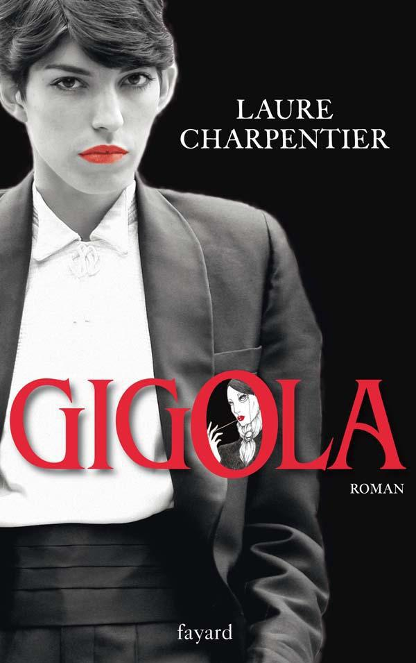

J’avais faim, ce soir-là. Une faim monstrueuse que je ressentais rarement. C’est à travers les vitres du French Cancan, où le couscous était somptueusement servi tous les mardis, que je vis Cora. Elle était attablée avec un homme qui me tournait le dos. L’air lamentable de la fille m’intrigua. Quant à l’homme, je ne voyais que ses épaules et ses gestes larges.
Je décidai d’entrer et commandai un demi au bar. Sonia, la barmaid, me le servit avec un large sourire.
Sans avoir jamais côtoyé le milieu, je pouvais cependant différencier un voyou d’un client, et je sus immédiatement que l’interlocuteur de Cora était un truand. Un truand apparemment coté. Les cheveux argentés, la chevalière et la gourmette où étincelaient les initiales en brillants, le costume lui-même, taillé dans un Dormeuil rayé, les mains éloquentes, tout respirait le souteneur.
Ma pauvre Cora semblait se ramasser sur elle-même à chaque éclat de voix, et je pense que si elle avait pu se fondre avec la banquette, elle l’eût fait sans hésiter une minute. C’est alors que je m’approchai du juke-box pour mettre un disque.
Cora leva enfin ses yeux de biche effarouchée, et m’aperçut?; une rougeur s’étendit rapidement sous son fard, et elle eut un geste de la main qui n’échappa pas à son partenaire. Le temps de suivre la direction de cette main, et je pris le regard de l’homme en plein visage. Il était beau, ce regard, dur comme une lame, impitoyable. Je soutins froidement le défi qu’il semblait me lancer.
Oui, cet homme était beau, le savait très bien, et je me mirais en lui comme en un lac. Par contre, Cora crevait de peur, et ça se voyait.
Sans baisser les yeux, je choisis les disques, appuyant sur les touches du pommeau de ma canne – négligemment. Le chèque d’Odette me galvanisait, et je pensais à la Lotus qui m’attendait le lendemain. J’avais entendu parler, comme tout le monde, de la loi du milieu, des règlements de comptes, de la triste réputation du quartier. Et sans bien savoir où j’allais, ni ce qui s’ensuivrait, je décidai d’attaquer la première. L’important était de savoir ce que ce type voulait de Cora, et s’il était arrivé dans sa vie avant ou après moi. Même s’il me descendait – je me croyais en plein saloon – je devais défendre Cora.
Telle était ma logique d’alors, et sans doute aurais-je eu moins d’appréhension si j’avais mieux connu le milieu et ses adeptes. Mais j’avais tout à apprendre de ses lois, et c’est ainsi que je fonçai dans l’inconnu.
–?Cora, veux-tu nous présenter??
–?Gigola, je te présente Pascal... Pascal, mon amie Gigola.
Il éclata d’un bon rire.
–?Mais asseyez-vous donc, Gigola... vous prendrez bien quelque chose??
J’acceptai en silence et m’assis près de Cora, sur la banquette. Pascal parlait avec un accent corse dont la musicalité me surprit. Il buvait le pastis par mominettes, en renversant la tête, et nous en étions – si je ne m’abuse – à la quinzième. Par l’échancrure de sa chemise, on apercevait une poitrine bronzée, glabre, qui évoquait les statues de la Grèce antique. La taille bien prise dans une ceinture de croco assortie aux chaussures, Pascal était un paquet de muscles, un mâle parfait qui devait avoir son succès sur tous les macadams.
Mon regard, aussi froid que le sien, dut le désarçonner, car il sourit très vite, si l’on peut appeler sourire le rictus qui déforma sa bouche.
–?Alors, que prenez-vous??
–?Un scotch sans glace, avec de l’eau de Seltz.
–?Une marque de scotch??
–?Black and White.
Pascal s’étant levé pour commander, je voulus en profiter pour rassurer Cora, mais elle détourna les yeux, et je vis une larme perler sur ses cils trop maquillés.
–?Alors, les filles, on n’a rien à se dire??
Il s’assit, les jambes ouvertes, dans une de ces positions conquérantes dont les hommes ont le secret.
–?Sylvie, tu dînes avec moi??
Le nom de Sylvie me ramena brutalement à la réalité. Cette façon cavalière d’inviter Cora devant moi méritait une leçon.
–?Pascal, Sylvie dînera avec vous si elle le désire, mais j’aimerais que vous l’invitiez après notre discussion.
Il sourit d’un air goguenard, et se carra dans le fauteuil.
–?Allons-y, Gigola. De quoi voulez-vous discuter??
–?Depuis combien de temps connaissez-vous Sylvie??
–?Oh, ça fait combien de temps, Poucette?? Six mois à peu près, hein?? Oui, six mois... On s’est connus au début du printemps. Juste le soir de ma levée d’écrou... Au fait, six mois que j’suis pas tombé?!
Il toucha le dessous de la table et se mit à rire grassement... Cora se força à sourire, et la vue de son menton qui tremblait me donna un nouvel élan.
–?Qu’avez-vous avec elle?? Une aventure?? Des intérêts??
–?Oh, des intérêts, c’est beaucoup dire... Elle vaut pas grand-chose au boulot, hein, Poucette?? C’est pas une gagneuse, et c’en sera jamais une. Mais c’est une bonne môme : elle m’a dépanné quand j’étais dans la merde et ça s’oublie pas. Pour l’aventure, oui... peut-être. Elle a été la première fille que j’me suis envoyée après trois ans de taule. Ça, il faut l’avoir vécu pour piger... Vous pouvez pas comprendre, vous, trois ans à tourner en rond dans une carrée de trois mètres... Et l’mitard, et tout... Et pas un rond, hein?? J’ai pas été assisté, moi. Pas d’cantine, pas d’pipes, que dalle... Il fallait que je plie cent cinquante boîtes en carton par jour pour avoir droit à un paquet de clopes... cinquante autres pour un œuf... Et pour les femmes, rien à faire... bernique?! La branlette une fois par semaine, sous la douche... vous savez, quand l’eau chaude vous coule sur la colonne... Paf, c’est le meilleur...
Oui, évidemment, le pastis n’arrangeait rien, mais le folklore y était, et le type m’intéressait.
–?Vous avez vécu avec elle??
–?Mais non, voyons... Comment c’est, votre nom, déjà?? Ah oui, Gigola. Tu parles d’un blase?! Eh bien, Gigola, un homme comme moi va pas s’mettre en ménage avec un «?tapin?». Vous rigolez ou quoi?? Pour replonger aussi sec comme proxo?? Merci, j’aime mieux les casses... c’est moins cher payé quand on est pris.
–?Donc, vous n’êtes pas un maque??
–?Mais non, mon petit?! J’suis un casseur, un braqueur, tout ce que vous voulez, mais pas un barbot. D’abord, ça rapporte plus, et puis dites donc, quelle patience il faut?!
Ce que je compris vite, c’est que tout le milieu se tient. Et un casseur, même s’il n’est pas maquereau, ne peut bander que pour une putain. Qu’il la choisisse ou non, qu’il y ait désir ou simple intérêt, la femme d’un truand ne peut être qu’une affranchie. Et s’il tombe amoureux d’une cavette, celle-ci ne le reste pas longtemps. De même que le gigolo ne regarde que les femmes d’un certain gabarit, de même le voyou se cantonne dans une catégorie. Sans être les mêmes, disons qu’elles ont en commun, ces femmes convoitées, la même prodigalité. Si c’est inné, tant mieux... Sinon, on sait bien les dresser en conséquence.
–?Pourquoi êtes-vous avec elle ce soir??
–?Ben, on s’est rencontrés rue de Douai.
J’avais eu raison de lui interdire ce bar à truands, on aurait dit que je le sentais.
–?Alors, je l’ai invitée à boire l’apéro... tout simplement.
Je le regardai droit dans les yeux. Pascal n’était pas un homme à boire l’apéritif avec Cora «?tout simplement?».
Ou il venait la relancer, ou il avait un besoin d’argent. Mais ce n’était pas pour ses beaux yeux, ou pour le plaisir de parler du passé.
D’ailleurs, si j’en avais douté un instant, un regard jeté sur Cora aurait suffi à me renseigner. Manifestement, elle était au bord des larmes, et ne savait quelle attitude adopter.
–?Pascal, si on envoyait Sylvie se changer?? Elle n’est pas habillée et risque d’être en retard. Pendant ce temps, nous parlerons tous les deux. Je suis sûre que nous avons des tas de choses intéressantes à nous dire.
Un instant dérouté, Pascal nous regarda tour à tour, puis accepta le marché.
–?Va t’saper, ma belle... les michetons n’attendent pas.
Cora sortit un billet de cent francs de son sac – sans doute un «?extra?» dans l’après-midi – pour payer l’addition. Toujours cette manie stupide, que les hommes devaient évidemment cultiver.
–?Laisse, chérie, tu es notre invitée.
Je lui avais dit «?chérie?» sciemment, et Pascal accusa le coup.
Je me sentis mieux, tout à coup, j’avais repris la situation en mains, et, quoi qu’il dût m’en coûter par la suite, j’étais bien décidée à la conserver.
Cette fille, décidément me tenait... Peut-être parce qu’avec elle, c’était la corde raide. Peut-être aussi les risques de cette aventure m’excitaient-ils??
De plus en plus terrorisée par le ton de ma voix et la pâleur du truand, la malheureuse s’exécuta de bonne grâce. On sentait qu’elle ne demandait qu’à fuir et à nous laisser nous débrouiller.
Je me levai en même temps qu’elle, l’aidant à s’extirper de la banquette trop profonde où elle se tassait depuis une heure. Pascal me regardait, éberlué qu’on puisse se comporter ainsi avec une prostituée, et j’exagérai ma prévenance à l’égard de Cora pour mieux le dérouter.
Il resta grossièrement assis, la saluant d’un ciao qui se voulait bon enfant.
–?Je la raccompagne jusqu’à la porte??
Il ricana.
–?Mais bien sûr... bien sûr... c’est beau l’amour?!...Et c’est si gentil à votre âge.
Peu m’importaient ses inepties... Ce que je voulais d’urgence, c’était pouvoir parler à Cora seule à seule, ne serait-ce que quelques instants, c’était indispensable.
–?Cora, veux-tu rester avec ce type??
–?Oh non, chérie?! Tu sais bien que non... Je te jure que je n’ai rien avec lui...
–?Ces types-là, quand on a eu une aventure avec eux, on est longtemps leur chose... mais je n’ai pas le temps de t’expliquer, dis-moi très vite qui tu choisis : lui ou moi.
–?Mais toi, bien sûr?!
–?Va te changer et réfléchis. Reviens ici sous n’importe quel prétexte. Si tu veux rester avec lui, enfile la robe rouge que je déteste. Si au contraire tu me préfères, choisis cette robe bleue de chez Franck. Maintenant, va... dépêche-toi... ce n’est pas la peine qu’il voie que nous complotons... À tout à l’heure?!
Cora me regarda intensément, sans un mot, et partit en flèche vers la rue Fontaine. Je revins lentement vers Pascal qui sélectionnait des disques de Maryse Nicolaï en plaisantant avec Sonia. Je me rassis et allumai une Camel en l’attendant.
–?Alors, à nous deux maintenant... Entre hommes, quoi?!
–?Peut-être, Pascal...
–?Amis ou ennemis??
–?Cela dépendra de votre mentalité. Si vous êtes correct, quelles que soient vos turpitudes, je serai votre amie.
Il siffla entre ses dents.
–?Vous causez bien, vous, hein?? Les «?turpitudes?», faut l’faire?! Ça m’rappelle au cercle l’autre soir... Un type s’approche de moi et me dit : «?Monsieur, vous n’êtes qu’un impertinent?!?» «?Impertinent?», tu parles d’un mot?! J’ai rien entravé... alors, je me suis dit : «?Est-ce que je cogne ou est-ce que je rigole???» Comme j’voulais pas me faire rayer du cercle où j’gagne pas mal, j’ai écrasé... mais j’sais toujours pas c’que veut dire «?impertinent?».
Je fus obligée de sourire... Il était drôle, finalement.
–?Eh bien, Pascal, impertinent veut dire insolent, hardi... On dit ça plutôt à un enfant qu’à un homme. Mais vous avez bien fait de sacrifier la vengeance à l’intérêt.
–?Ah, vous aussi, vous aimez le pognon??
–?Oui, je l’aime... pour ce qu’il procure, naturellement.
–?Naturellement... pas pour le mettre à la Caisse d’épargne... «?Là où il y a l’écureuil?».
Décidément, il m’amusait... Dommage que nous ne puissions pas devenir copains.
Je guettais le coin de la rue Fontaine. Si Cora revenait vêtue de rouge, je filais sans rien ajouter.
–?Pascal, pourquoi avoir invité Sylvie à l’apéritif?? Vous vouliez quelque chose?? De l’argent??
–?Vous savez, le cercle tous les soirs, ça peut pas toujours banquer... Comme ça fait trois soirs que j’flambe, j’suis raide comme un passe. Presque une brique, que j’ai casquée?! Faut comprendre...
–?Et les affaires??
–?Zéro en ce moment... On est sur un coup, mais faut bien l’préparer. Pas question d’se mouiller pour des prunes, hein?? Alors, en attendant, faut vivre...
–?Pas de femmes??
–?Oh, une vieille. Ça fait dix piges que j’la traîne, j’y suis habitué. C’est pas qu’elle est mauvaise, non... elle rapporte. Mais rien ne vaut une bonne doublarde et j’avais pensé que Sylvie...
–?Oui, évidemment... Et puis, elle est jeune...
–?Trop, mais ça a du bon... Les michetons aiment ça, la jeunesse... C’est moi qui l’ai présentée au bar où elle travaille... La taulière est une copine à ma régulière.
Il parlait beaucoup, avec une volubilité dangereuse. Au fond, il ne me connaissait pas. Le pastis et Les Fiancés de Sartène, que débitait langoureusement le juke-box, devaient certainement y être pour quelque chose... Il sourit, mielleux :
–?Et vous, comment l’avez-vous connue??
–?Dans un café. Nous avons parlé, sympathisé.
–?Ça m’étonne...
–?Qu’est-ce qui vous étonne??
–?Qu’une fille comme vous puisse sympathiser avec une fille comme Sylvie?! Notez bien que j’m’en fous... J’aime pas les gouines, mais vous, c’est pas pareil que les autres... j’vous gobe.
–?Remarquez, je ne vous l’ai pas prise... j’ignorais jusqu’à votre existence.
Peut-être le fait de la connaître, cette existence misérable, n’aurait-il rien changé à l’affaire, mais il n’était pas obligé de le savoir.
Il crut bon d’ajouter :
–?Sylvie n’est pas ma femme... C’est une pouliche que j’ai repérée, c’est tout. Pour ce qui est du plumard, j’ai ce qu’il me faut, j’attends pas après.
–?Ah??
–?Oui, une cavette. Une ancienne journaliste, vous voyez l’genre...
–?Attention, c’est dangereux, les journalistes... trop curieuses et trop bavardes.
–?Oh, ça risque rien, elle me croit agent immobilier... Et puis, s’pas, madame bande.
–?Et ça paye??
–?Guère... mais j’y vais en douceur. Pour l’instant, c’est plutôt un béguin.
–?Combien vous faut-il pour vous dépanner??
–?Oh, cent sacs, ce serait déjà pas mal... Ça permettrait de m’refaire.
–?Et vous pensez que Sylvie les a??
–?Oui, j’crois qu’elle a une petite planque... et si j’peux en profiter, hein, ça s’rait pas plus mal.
C’est alors que j’aperçus Cora qui débouchait de la rue Fontaine. Mon sang ne fit qu’un tour... Elle était en robe du soir, légèrement ridicule en ce début de nuit plutôt froide?; les pierreries de la robe bleue étincelaient, captant tous les regards. Droite et courageuse, elle avançait sans accorder le moindre intérêt aux persiflages des badauds.
–?Combien voulez-vous, Pascal, pour la laisser??
–?Pourquoi??
–?Comme ça... répondez-moi.
–?Mais j’ai pas à la mettre à l’amende... C’est pas ma femme, en plus elle a même jamais tapiné pour moi.
–?Mon cher, vous parlez comme un maque?!
Il sourit, troublé.
–?Pascal, je la veux, c’est clair. Combien??
–?J’sais pas, moi... Disons trois cents sacs...
–?Cash??
–?Oh, ça dépend des possibilités... cent sacs cash, et c’est O.K.
Je lui tendis le chèque d’Odette.
–?Et cinq cents cash, cinq cent mille anciens francs ça vous va?? C’est au porteur, vous allez les toucher quand vous voulez...
Pascal se saisit avidemment du papier et me regarda, incrédule.
–?Ben alors vous, on peut dire que ça traîne pas?! Chapeau pour le boulot.
–?Attention, Pascal, Sylvie, c’est fini pour vous.
–?Oh ça alors, parole d’homme... Juré sur la tombe de ma pauvre mère?! Et c’est du garanti, chez nous, quand on jure sur la tombe de sa mère. Et puis, vous savez, à ce prix-là, je vous en trouverai d’autres si vous voulez... parce qu’entre nous, c’est pas un chopin, la môme, et elle est loin d’les valoir, vos cinq cents sacs.
Je souris?; visiblement il ne comprenait rien... Je lui tendis la main, en homme, et rejoignis Cora.
Elle m’attendait comme on attend une résurrection.
J’allai chercher la Lotus le lendemain. La soirée avait été douce, partagée entre les larmes de Cora et l’extrême solitude d’une nuit sans étoiles.
Je lui avais raconté mon geste, en cachant évidemment le prix de l’amende payée à Pascal. Elle n’aurait rien compris à ma soudaine richesse, et je ne tenais pas à lui parler d’Odette. Cependant sa reconnaissance et sa fidélité me touchaient, et je n’eus pas une seconde à regretter mon attitude.
Je n’avais pas obéi à une simple impulsion, mais plus subtilement à un impérieux besoin de pouvoir.
Désormais, je tenais le filon et le savais fort bien. D’un côté comme de l’autre, l’argent rentrerait. Et si j’avais eu un instant d’hésitation concernant cette liaison avec Odette, mon brutal retour à la pauvreté me décida mieux que n’importe quel argument.
Il fallait que je continue à satisfaire ma bienfaitrice, tout en persévérant dans mon entreprise avec Cora. Je devais les mener toutes deux de front. Sans état d’âme, pour en tirer le meilleur parti. Grâce à moi, Cora deviendrait une prostituée de luxe, et Odette une femelle comblée. Toutes deux me rapporteraient un maximum – et feraient de moi le personnage dont je rêvais au plus profond de moi-même : cet être froid, calculateur, viril, et surtout d’une érotomanie quasi scientifique.
Ce matin, je n’avais pas attendu Cora. Elle avait dû rentrer tristement dans sa robe constellée, vers son hôtel minable. Pas une seconde, je ne l’avais regardée. Elle avait dû prendre pour inconstance ce qui n’était qu’indifférence profonde. J’étais incapable de m’attacher à cette fille, et le fait que je l’aie achetée ne prouvait nullement l’existence d’un quelconque sentiment...
Mes instants d’émotion étaient aussi intenses que brefs.
Lorsque je revins dans le quartier au volant de ma merveilleuse machine, il était à peine midi, et les rues commençaient à s’animer, peuplées presque exclusivement d’employés de bureau, d’ouvriers et de ménagères.
La rue Lepic grouillait, drôle et folklorique, rappelant sous son soleil d’automne la gouaille d’Yves Montand.
Je me garai devant le Néant et empochai fièrement la clé de contact toute neuve qui brillait sous les rayons tièdes comme une pépite d’or.
Je me sentais légère, délivrée d’un poids trop lourd.
C’est dans cet état d’esprit euphorique que je repérai sur le boulevard la petite garçonne du Monocle.
À la main un horrible corniaud tiré par une ficelle, le pantalon tirebouchonnant, le cheveu hirsute et les traits boursouflés de ceux qui boivent toute la nuit, elle semblait poursuivre un rêve insensé dont nul n’avait la clé.
La fille avait une démarche lourde qui se voulait virile, et qui n’était que disgracieuse. Elle avançait le dos légèrement voûté, une main dans la poche arrière de son pantalon, style camionneuse, vulgaire, certainement un peu sale, mais fort intéressante au plan humain.
La chemise qui se voulait écossaise avait dû être lavée et relavée plusieurs fois, les bottes aux talons éculés plissaient aux chevilles, et l’ensemble révélait une désolation difficilement supportable.
Ce qui m’a toujours frappée chez ces fausses garçonnes, c’est ce roulement des épaules si caractéristique, symbole pour elles de la virilité absolue.
Sale et triste, le chien – genre fox à poils durs – «?genre?» car il n’avait pas plus de race que sa propriétaire, marchait lugubrement le long des arbres du boulevard, levant de temps en temps une patte fatiguée.
Elle se retourna brusquement, me fixant d’un œil morne.
–?Bonjour, que faites-vous ici??
–?Mon amie habite le quartier... alors, quand je rentre avec elle, je passe la journée dans le coin.
–?Vous ne vivez pas ensemble??
–?On ne peut pas.
Inutile de demander les raisons de cette impossibilité.
–?Comment ça va depuis l’autre soir??
–?Oh, toujours pareil, vous savez... C’est le train-train.
Elle soupira, et je vis passer dans ses yeux une lueur que j’aurais aimée moins fugace. Avec le chien sagement assis sur sa queue maigre, la ficelle enroulée autour de son poignet et les cheveux droits sur sa tête, on aurait juré un poulbot de Montmartre. Elle avait l’air si vulnérable, si résigné à tout, que, la force des contrastes opérant, je sentis ma personnalité s’affirmer davantage.
–?Voulez-vous boire quelque chose??
–?C’est à moi à vous offrir un verre. Vous avez été si gentille de m’inviter à votre table l’autre nuit. Pourtant, ce n’étaient pas les filles qui manquaient?!
Comment lui avouer que je n’avais eu aucun tri à faire?? C’était là-bas l’escalade dans le ridicule... Celle-là au moins n’avait pas essayé de se faire valoir, de se pousser du col. Elle était minable, en avait pris conscience une fois pour toutes, et n’avait pas essayé de sortir de son état. Au fond, c’était une forme de courage dans la lâcheté.
–?Voulez-vous monter chez moi?? J’ai du whisky, du porto, ce que vous désirez...
–?Oh non, pas d’alcool à cette heure... Je ne suis même pas remise de la nuit, vous pensez, on est rentrées à six heures du matin?!
–?Vous êtes sortie trop tôt.
–?Oui, je sais... Mais le chien pleurait, alors je me suis dévouée...
–?Il est à vous??
–?Non, à mon amie. Elle ne le sort pas. Vous savez, elle se lève à six heures du soir, elle a juste le temps de s’habiller, et c’est déjà l’heure du boulot... Elle boit beaucoup, elle mange un peu et elle dort très mal.
–?C’est gai pour le chien...
–?Et pour moi??
–?Vous, ce n’est pas pareil, vous êtes libre de la quitter, libre de sortir, libre de vivre autrement... Tandis que le pauvre, lui, n’a guère le choix...
–?C’est vrai, ce que vous dîtes... Vous aimez les bêtes??
–?Oui, foncièrement.
–?Et les enfants, naturellement??
–?Naturellement. Ce sont deux domaines sacrés pour moi, auxquels je ne m’attaque pas. Alors, c’est d’accord pour le verre à la maison?? Je vous préparerai du café très fort et des tartines beurrées.
–?Oh ça oui... À cette heure-ci, c’est le meilleur.
J’avais tellement vécu la nuit que je connaissais parfaitement la saveur du petit déjeuner à midi. C’était la vie un peu à l’envers, mais avec des rituels bien précis, dans un désordre apparent.
J’attrapai la ficelle du pauvre chien, détachai ce licol improvisé, et voulus le faire courir. Malgré une grande claque amicale sur le derrière pour le dégourdir, il ne broncha pas. Il tressaillit simplement, fit un bond de côté, et me regarda sans comprendre, d’un œil humide.
Je rendis à la fille la ficelle que je roulai en boule.
–?Achetez-lui une laisse et un collier... C’est ridicule, cette ficelle.
–?Je le dirai à mon amie...
–?Pourquoi?? Vous ne pouvez pas acheter quelque chose à son chien sans lui demander la permission??
–?...
–?On va lui acheter un collier et une laisse. D’accord??
Elle me regarda, elle aussi, du même air légèrement abruti... J’allais trop vite. Pourtant, elle opina du chef en me suivant.
–?Vous direz que vous l’avez acheté vous-même. Inutile de raconter notre entrevue à votre chérie.
–?Oh, je ne lui raconterai pas. Elle ne comprendrait pas.
J’avais encore des illusions sur la franchise féminine...
J’achetai, rue Lepic, un magnifique collier et sa laisse assortie, accrochai le tout au cou du chien, sans susciter le moindre réflexe chez la pauvre bête.
Nous enfilâmes la rue Fontaine. La fille s’était enfermée dans un mutisme dont je comprenais fort bien la signification. Se sentant humiliée, elle réagissait avec l’arme des pauvres : le silence. Et cela me touchait plus que n’importe quelle insulte.
–?Comment vous appelez-vous??
–?Johanne.
–?C’est un prénom de travail??
–?Bien sûr... ma mère n’aurait jamais trouvé ça toute seule.
Elle monta les marches de l’escalier avec moi, et le tapis amortit le bruit de ses bottes ferrées. Le chien suivait, morne et dégoûtant.
Je lui ouvris la porte et la laissai passer. Elle hésita un instant, puis se décida. Je vis sa tristesse et son silence s’accentuer.
–?Asseyez-vous, je vais tout préparer. Vous pouvez mettre les disques que vous préférez. J’ai classique et moderne.
–?Je ne saurai pas le faire marcher.
J’allumai l’électrophone et la laissai s’adapter...
Bientôt, le Milord de Piaf me parvint du salon par flonflons. Le choix d’un disque comme d’un livre dévoile toute une personnalité. Johanne ne pouvait qu’aimer Piaf, et mon côté populaire s’en émut. Je la trouvai assise sur ses talons, dans une attitude d’adoration qui la magnifiait.
–?Voilà, Johanne... c’est servi.
Elle se leva, et je regrettai la pose précédente. J’avais brisé un charme et m’en repentis immédiatement. Portant le plateau fumant sur la table basse, je lui présentai la tasse et l’assiette de tartines. Le beurre fondait sur le pain chaud, répandant son arôme. Le chien me suivait de près, collé à mes talons, repu et enfin confiant. Je savais qu’il n’en serait pas de même pour sa maîtresse, et que si une excellente pâtée suffisait souvent à combler un animal, le meilleur des caviars ne comblerait jamais un cœur triste.
La souffrance de Johanne, je la sentais. J’aurais presque pu la toucher. C’est pourquoi je ne voulais surtout pas la heurter de front.
Elle mangea et but, sans me regarder, écoutant religieusement la môme Piaf. Elle était tendue, angoissée, mal à l’aise.
Je ne la retins pas lorsqu’elle voulut prendre congé. Elle me remercia du bout des lèvres, attacha la laisse neuve au cou du chien, et partit sans un regard en arrière, laissant dans la pièce une tenace odeur de misère qui me fit mal un bon moment.
Je me promis de lui offrir une bouteille de champagne à la première occasion. Le prix m’importait peu, je voulais coûte que coûte retrouver cette petite entraîneuse volubile qui m’avait raconté ses malheurs – vrais ou faux – comme à une bonne cliente qu’on veut apitoyer.
Trois mois passèrent. Je menais de front mes deux vies, en essayant de les conserver parallèles. Mes deux femmes ignoraient leur existence réciproque, et j’avais réussi à leur donner un maximum de félicité.
J’étais devenue d’une instabilité d’humeur quasi maladive, et les gens qui me côtoyaient – rarement par affection sincère – ne comprenaient rien à mon caractère.
À force de rechercher l’imprévu, j’étais devenue imprévisible?; à force de vouloir échapper aux autres, je finissais par échapper à moi-même...
Bref, j’étais malade et ne le savais pas. D’un côté, j’avais l’argent, l’adulation, la vie large et fastueuse?; de l’autre, le danger toujours présent, l’aventure à chaque instant. Je vivais à fond, rarement à jeun, dilapidant santé et gros billets avec une égale frénésie.
Je n’avais pas un sou d’économie, et les plus gros chèques fondaient comme neige au soleil. Mes costumes ne se comptaient plus, je possédais une garde-robe de prince, les salons d’esthétique m’accueillaient plusieurs heures par jour. J’étais belle, parfumée, maquillée, le corps lisse et impeccable, la joue satinée jour et nuit, pas une mèche ne bougeait, pas une tache ne subsistait plus d’une minute. J’étais désirable, soignée, manucurée, poncée de la tête aux pieds.
Cora, voyant ces orgies de soins, travaillait davantage, à des taux toujours plus élevés. J’étais fière de mon œuvre, elle avait offert le meilleur d’elle-même, et je savais l’en remercier.
Elle roulait toute la nuit en Barracuda, sans être affectée à aucun quartier. Elle savait maintenant aller là où le pigeon donnait. Je lui avais appris à dévoiler ses cuisses au volant, à aguicher le client possible n’importe où – même à un feu rouge – pourvu qu’elle devinât une ouverture. C’est là le plus dur pour une bonne putain. Comprendre vite où est le meilleur – celui qui va vous faire la nuit – et en cas d’échec, ne pas s’acharner sur le gros gibier. Savoir limiter les dégâts d’une nuit creuse, baisser les prix à l’occasion, se rattraper en couchant un peu plus.
Pour assimiler sa leçon, Cora avait fait preuve d’une merveilleuse bonne volonté qui n’avait sans doute d’égal que son amour pour moi.
Elle me rapportait tous les matins un minimum de cinq cents francs. Quand elle gagnait plus – parfois le double – elle en tremblait de fierté, et je savais la récompenser en conséquence.
J’avais conservé mon studio de la rue Fontaine, et je lui versais sa ration d’amour deux ou trois fois la semaine. À chaque «?comptée?», elle me demandait si je mettais de l’argent de côté.
–?Bien sûr, chérie, je ne fais que ça. Encore un an et nous achèterons une petite auberge sur la côte.
Quelques chambres, un bar-restaurant, c’était son Pérou à elle, pourtant je n’avais pas un remords lorsque je voyais une larme de joie mouiller ses cils.
J’étais devenue d’une dureté implacable, cynique, imperméable à la moindre émotion. Cora n’était qu’un robot que je me contentais de huiler périodiquement pour en assurer un meilleur fonctionnement. Son argent ne servait à rien, et il était inutile qu’elle le sût.
Quant à Odette, elle aussi avait tenu ses promesses. C’étaient des cadeaux toujours plus éblouissants et un chèque confortable récompensait chacune de mes visites. Je passais la nuit du mardi avec elle. J’arrivais régulièrement à dix-neuf heures pour en ressortir le lendemain, rarement avant midi. J’avais ma chambre attitrée, où je me retirais avec délices une fois Madame endormie. Je devais dîner avec elle. Ces interminables débuts de soirée étaient les meilleurs. N’ayant pas encore bu, pas encore fumé, elle était douce, parfois éloquente. C’était son heure bénie, prélude à la lente dégradation. Elle passait alors d’une conversation colorée à une hébétude quasi animale.
J’avais pris l’habitude de lui faire l’amour après le rôti. Ce qui repoussait la fin du dîner aux premières heures de la nuit. Paca avait fort bien compris ce rite, et m’interrogeait du regard après le plat de viande. Pour accepter cete situation avec autant de bonne grâce, elle devait bénéficier d’un traitement royal, car il arrivait que nous terminions ces dîners-soupers à l’aube. Pas une fois nous n’eûmes à la chercher vainement. Dès que je la rappelais, elle surgissait, impeccable, prête à tout, merveilleusement discrète et disponible.
Je n’avais jamais fait mention de cette première soirée où elle avait perdu la tête un instant, et sans doute cela jouait-il aussi en ma faveur.
Au petit matin, je l’entendais gagner à pas lents l’escalier de service pour aller dormir sous les combles. À midi, elle était là, prête à relayer la femme de chambre qui déjeunait à onze heures en attendant le réveil d’Odette.
Ainsi se résumaient mes heures passées près de cette femme aussi intelligente qu’atrocement déprimante.
À chaque visite, je devais innover et, pourvu qu’elle sentît la plus légère touche d’originalité, son besoin incessant de nouveauté était satisfait.
Je devais ce soir-là choisir le cadeau de Noël de Cora. Après quelques jours d’économie – noblesse oblige –, j’avais réussi à réunir la somme nécessaire à l’achat d’un astrakan gris. Cora avait toujours sur le dos la même veste de vison, offerte au début de l’hiver. Je la savais pleine de convoitise, et, bien qu’elle n’osât rien me demander – ne pensant qu’à son auberge, et résolue pour cela à tous les sacrifices – je devinais aisément qu’il me fallait de temps en temps la récompenser d’une manière plus tangible.
J’avais commandé le manteau la veille, chez Révillon.
Il faisait froid en ce soir du vingt-trois décembre – jour de mon anniversaire – un froid sec et noir. Je roulais le plus vite possible, car je devais retourner rue Fontaine porter le manteau de Cora, afin de ne pas le laisser dans la Lotus une partie de la nuit.
En effet, Odette m’invitait à l’Olympe, sacrifiant pour une fois ses fameuses soirées du mardi consacrées à Éros. Je lui en savais gré, consciente de la valeur de ce cadeau. Elle n’aimait pas sortir?; car, en bonne femelle constamment chaude et rarement assouvie, il pouvait lui prendre soudain l’envie fulgurante de faire l’amour. Au partenaire présent de satisfaire sur-le-champ ce désir selon son humeur du moment. C’était alors la flambée des sens qui confinait à l’hystérie, l’extase, puis la reconnaissance éperdue.
Il était donc difficile, dans ce contexte, de sortir souvent. Il fallait rester toujours vigilant, attentif au moindre de ces symptômes, prêt à combler le plus fugace de ses désirs.
J’avais mis quelque temps à apprendre le maniement de ces armes, mais sans doute étais-je particulièrement douée, car j’allai très vite en besogne. J’étais bel et bien devenue ce gigolo chevronné, rêve de toute femme amoureuse – et riche. Gigola...
Je garai la voiture devant chez Révillon, et entrai chercher le manteau. Le carton était prêt, le personnel stylé?; la boutique sentait bon la chaleur et les parfums du même nom. J’y serais volontiers restée plus longtemps, mais les heures tournaient, et il ne fallait pas qu’Odette vît le carton dans la voiture?; de plus, je n’étais pas habillée, il était dix-huit heures quarante-cinq, et j’avais rendez-vous au Drugstore Opéra à vingt heures.
Au moment où je payais – en liquide – ce fameux astrakan gris, le timbre distingué de la porte résonna, et j’entendis le personnel se précipiter. Ce devait être une cliente de marque, à entendre les «?Madââme?» obséquieux que le directeur lui susurrait.
Distraitement, je tournai la tête, et ce que je vis me glaça. Odette, délicieuse dans un trois-quart de vison tourmaline assorti à la toque, gants et robe d’un bleu à peine teinté, se dirigeait vers moi en souriant.
–?Bonsoir, chéri... Que fais-tu là?? Des achats pour Noël?? Serait-ce...
–?Non, Odette. Ce n’est pas pour toi. J’achète un manteau à une ancienne amie revue récemment.
–?Un cadeau de retrouvailles, en quelque sorte?? Tu ne te moques pas d’elle, dis donc... Heureusement que je suis là pour favoriser tes libéralités?!
Je blanchis sous la grossièreté, et l’entraînai au dehors malgré ses protestations. Le personnel, fasciné par la scène, n’en perdait pas une miette.
–?Madame s’en va??
–?Oui, Madame s’en va... Elle reviendra avant la fermeture, n’ayez crainte...
–?Bonsoir mademoiselle... À tout à l’heure, madame. Nous fermerons à l’heure qui vous conviendra.
Sur le trottoir, elle eut peur soudain. Peur de mon visage déformé par la rage. Peur du scandale, en bonne bourgeoise qu’elle était. Peur de tout, du froid, de la nuit, du bruit.
–?Écoute-moi bien, Odette. Tes «?libéralités?», comme tu dis, je les gagne, et tu le sais. Si ce n’est toi, demain j’en trouverai une autre, et peut-être plus généreuse. Sache que je peux satisfaire n’importe quelle femme au monde, et si tu ne retires pas cette phrase malheureuse, je te quitte pour toujours. Tu pourras téléphoner, traîner toutes les nuits pour essayer de me retrouver, même si tu y parvenais, je ne te reconnaîtrais pas, Odette. Tu m’entends, je ne te re-con-naî-trais pas.
Aveuglée par la violence, j’avais attrapé le col de son précieux vison et tirais dessus à le déchirer. Je la sentais trembler de frayeur, et cela décuplait ma haine.
–?Gigi, écoute... Je t’assure, je ne voulais pas.
–?Ne m’appelle pas Gigi?! Retire ta phrase et demande-moi pardon.
–?Non, pas à ce point-là... Je...
–?Demande pardon, vieille salope?!
D’une main fiévreuse, je fouillai dans la poche de ma peau lainée grise, et en retirai la clé de contact de la Lotus. De l’autre, je la tenais toujours étroitement, sans desserrer d’un pouce mon étreinte implacable. La buée de son haleine sentait l’alcool.
–?Tiens, je te rends la voiture. Le reste, je te le rendrai demain à...
–?Je te demande pardon, chéri. Je n’aurais pas dû.
Étonnée par une victoire aussi rapide, je ne la lâchai pas. Le carton contenant l’astrakan gris gisait contre ma botte. Les badauds commençaient à s’attrouper. Pour les exciter un peu, et aussi parce que ça me faisait bander, j’attirai Odette contre moi et l’embrassai durement, en pleine bouche. Je la sentis haleter, puis s’abandonner... La femme du monde s’effaçait devant la chienne.
–?Viens, Odette, la voiture est là.
Les curieux élargirent le cercle, je ramassai le carton et me frayai un chemin au milieu d’un long murmure de réprobation. Je me foutais de leur opinion. Ma colère était tombée, d’un seul coup, comme d’habitude, pour ne laisser en moi qu’une immense fatigue.
Elle s’assit à côté de moi dans la voiture, et m’empêcha de mettre le contact.
–?Ne t’inquiète pas, je veux simplement trouver une rue plus calme pour ne pas avoir cette bande de ploucs comme spectateurs...
–?Gigi, il faut que j’y retourne avant ce soir... J’ai absolument besoin...
–?Ils fermeront lorsque tu en donneras le signal. C’est ça, le pouvoir du fric. Laisse-moi faire un tour et revenir. Dans cinq minutes, il n’y aura plus personne... Si nous restons là, il y en aura toujours qui attendront on ne sait quoi.
Elle lâcha mon poignet, et alluma le poste de radio. J’enfonçai le briquet de bord et lui allumai une Camel. Le chauffage ronronnait, réconfortant.
Malgré le froid, elle portait des escarpins de couleur sable, en satin, assortis à la plus ravissante des pochettes...
Plus que jamais, je comprenais la force du luxe, ce luxe qui idéalise tout, nimbant les pires déchéances d’une sorte de halo.
Je posai la main sur sa cuisse. Glacée, elle frissonna sous l’attouchement. Je montai le chauffage et me garai dans une petite rue derrière l’Étoile. Les vitrines scintillaient de mille feux, éclaboussant les trottoirs de gerbes pailletées. Partout, c’était la fête, l’odeur verte du sapin traditionnel, les guirlandes, les paquets-cadeaux.
C’est terrible, cette odeur d’allégresse, lorsqu’on a le cœur vide. Même l’argent, que j’avais tant désiré, ne comblait pas ce manque. Insensiblement, je glissais vers une amertume nouvelle, un besoin fou d’amour qui parfois m’étreignait pour mieux me torturer.
–?Gigola, ma Gigola, je t’aime.
–?Odette, ne recommence pas?! Tu ne m’aimes pas. Tu jouis bien avec moi, je te suis indispensable – pour le moment – sur le plan physique. Ne mélange pas toujours le cœur et le bas-ventre, ce n’est pas le même rayon.
–?Gigi, je t’aime et te le répète. J’ai fait le maximum pour que tu le comprennes...
–?Oui, tu as payé.
–?Je t’en prie, je t’ai demandé pardon. Aie le bon goût de n’en plus parler.
J’entourai son épaule de mon bras, et elle vint tout de suite se nicher dans mon cou. Oui, au fond, peut-être m’aimait-elle?? C’était si subtil, ce que l’on nomme amour, comment savoir?? Comme si le même sentiment chez deux êtres différents ne s’orthographiait pas de la même manière.
Elle sentait bon. Un parfum de fourrure parfaitement en harmonie avec la saison, l’heure et la toilette choisie. Femelle jusqu’au bout des ongles, j’aurais presque pu m’attacher à toi en d’autres circonstances.
–?Allez, je te raccompagne, Odette... Je voudrais que nous passions cette soirée sans nous disputer. C’est mon anniversaire, l’avant-veille de Noël, et j’aimerais que nous nous amusions.
Pour toute réponse, elle se pressa contre mon épaule et me prit la main.
–?Gigi, il ne faut pas qu’ils ferment avant mon passage.
–?C’est indispensable, cet achat chez Révillon??
–?Oui, indispensable.
–?Je te retrouve tout à l’heure ou je t’attends??
–?Attends-moi... Finalement, c’est providentiel, notre rencontre.
–?Pourquoi??
–?Comme ça... tu verras.
–?Bon, bon, je ne suis pas curieuse.
–?Bien sûr, tu n’es pas femme?!
–?Voilà, ce doit être ça.
Elle fut heureuse de me voir sourire, et d’un seul coup, l’atmosphère se détendit.
–?Qu’as-tu fait d’Ivan??
–?Ivan est parti réveillonner dans le Var. Je suis donc sans chauffeur pour les fêtes.
–?Très bien, Odette. Je le remplacerai...
–?Mmm... Je ne peux plus me passer de toi, mon trésor... Tu le sais, malheureusement, car tu en profites.
Je lui ouvris la portière de l’intérieur.
–?Vous êtes très belle, ce soir, Madame.
Elle répondit par un gloussement heureux et s’envola vers la devanture illuminée du fourreur.
J’allumai une Camel en pensant à Odette. Pitié?? Tendresse?? Soin tout naturel dont on entoure un mécène?? Je ne savais trop à quel mobile j’obéissais, mais le résultat était là... Finalement, je tenais un peu à cette femme. Peut-être davantage qu’à Cora.
Et pourtant, j’étais prête à la quitter sur l’heure s’il le fallait. Toujours ce trait de caractère affolant chez moi, et qui ne s’arrangeait guère avec le temps.
Des groupes passaient, hilares sous le froid qui rougissait leurs nez comme autant de lumignons. Des amoureux transis, serrés l’un contre l’autre, le visage perdu au creux d’immenses écharpes, des enfants excités sous leurs pompons de laine, les joues allumées, les yeux fiévreux, courant partout, rêvant déjà au lendemain et à la cheminée croulant sous les jouets.
Ce soir, j’éprouvai un atroce sentiment de solitude. Tel Faust, j’avais vendu mon âme à un dieu déchu : l’Argent.
La radio diffusait en sourdine l’Ave Maria de Gounod... Cette musique me ramenait des années en arrière, lorsque j’allais écouter la messe de minuit à la basilique de Saint-Denis, entre ma mère et ma grand-mère. Petite fille aux pieds glacés, transportée au septième ciel par ces grandes orgues inoubliables qui crevaient les hautes voûtes. Oui, cette basilique, berceau de ma vie religieuse enfantine, sa crypte unique, ses gisants aux faces extatiques, leurs longues mains jointes en une dernière supplique, combien de fois ai-je rêvé devant leurs tombeaux et les plis lourds de leurs chapes. Avec quelle volupté ai-je respiré ces odeurs d’encens et de bougies grésillantes qui montaient à mes narines comme autant de drogues permises.
On n’oublie jamais une telle atmosphère, et même les années maudites d’une existence en restent imprégnées. C’est pourquoi, en cette veille de Noël, je décidai d’aller à la messe de minuit. Je ne serais pas la seule pécheresse dans la masse des assistants. Dieu n’est-il pas d’abord Miséricorde?? Bien que cette pensée – pourtant réconfortante – ne doive pas encourager la brebis égarée, je persiste à croire à la possibilité du rachat. Aucune lie n’est définitive, et l’on peut toujours – pourvu qu’on le veuille – remonter à la surface d’un coup de talon...
Ah, le vertige de la pente savonneuse où l’on se laisse glisser, qui donc pourra jamais le décrire??
Odette surgit de la porte enrubannée, qui s’éteignit derrière elle... Je sortis de la voiture pour l’aider, et elle me remercia d’un sourire.
–?Tiens, chéri. C’est assez lourd, et surtout très fragile... Essaie de le caser dans le spider.
Malheureusement, dans le spider, il y avait déjà l’astrakan, et quiconque connaît le volume de la Lotus comprendra aisément l’impossibilité d’y engouffrer deux énormes cartons de chez Révillon.
–?Assieds-toi, Odette, et pose-le sur tes genoux.
–?Ah oui, c’est vrai... Il y a déjà l’autre... Que lui as-tu acheté, à cette fille??
–?Un manteau d’astrakan gris.
–?Beau??
–?Une fourrure Révillon ne peut être de mauvais goût, chérie.
–?Il n’y a pas une bande de cuir gris à la ceinture??
–?Non, uniquement de la fourrure. Je voulais de l’habillé, pas du sport.
–?Le col??
–?Légèrement officier...
–?Alors, il n’est pas habillé... c’est le style redingote.
–?Oh, écoute, Odette, on ne va pas discuter une heure sur ce sujet... La petite appréciera elle-même son cadeau.
–?Elle a de la chance, tout de même... Tu l’as aimée??
–?Non.
–?Ah?? Pas du tout??
–?Pas du tout.
–?Et moi, tu m’aimes un peu??
–?Non, Odette, je ne t’aime pas non plus.
–?Tu ne sais pas aimer, petit monstre... C’est dommage, mais c’est ainsi... Je me raisonne en me persuadant qu’il s’agit d’une incapacité.
Oui, sans doute avait-elle raison. Une incapacité, sans plus. Mon cœur avait battu pour une femme – la première – mais sa mort m’avait tant fait souffrir que je m’étais blindée pour toujours.
Peut-être la cuirasse cachait-elle un défaut?? Qui saurait le trouver?? Moi-même, je l’ignorais. Il est impensable de posséder un coffre-fort sans en connaître la combinaison... Et pourtant, je persistais à croire qu’au fond, bien au fond, dormait un de ces trésors inexploités que personne sans doute ne saurait découvrir.
–?Chéri, tu comptes sortir ce soir en peau lainée??
–?Je sais bien que c’est un peu sport, mais elle est si chaude.
Odette minauda :
–?Ce qu’il te faudrait, c’est une cape de fourrure.
–?Hum... un peu féminin.
–?Ça dépend, tu sais... Il y en a de très originales, qui réchaufferaient à merveille un de tes smokings.
–?Je t’avoue n’y avoir guère pensé.
–?Moi, j’y ai pensé...
Je la regardai. Pas un instant, je n’avais réalisé que cette course si urgente chez Révillon pût être en mon honneur. Évidemment, j’avais vingt-cinq ans ce soir, et elle moins qu’une autre ne l’avait oublié.
–?Odette, tu ne vas pas me dire...
–?Petit sphinx, comme je t’aime lorsque tu ne sais plus où tu en es?! Tu vois, je voudrais prendre une photo quand tu es comme ça, partagée entre le sourire et le doute... Ah, je t’aime, moi... je t’aime comme une folle... Attention, c’est rouge?!
Je freinai à temps. Le carton énorme me fascinait, et j’aurais donné gros pour pouvoir l’ouvrir.
–?Dis-moi ce que c’est.
–?Mais une cape, mon chéri. Une cape courte de léopard. C’est ce qui te va le mieux. Yeux verts, étroits, félins, je vais vous donner votre parure idéale, vous allez retrouver votre peau primitive.
Elle déclamait avec emphase, heureuse de me sentir surprise, et jouissant de son triomphe.
Je lui baisai la main. J’étais reprise par mon dieu déchu : l’Argent.
Mon âme ne vibrait plus, étouffée par une splendide peau de léopard qui se déroulait à l’infini.
J’essayai la cape chez elle, et j’avoue n’avoir jamais contemplé aussi magnifique fourrure. Cela dépassait en raffinement mes rêves les plus fous?; et, lorsque je sentis cette peau splendide sur mes épaules, il me sembla vivre un bref instant de paradis.
Odette avait voulu que je revête au préalable le plus soyeux de mes costumes, la plus ivoirée de mes chemises. Elle-même avait noué la lavallière de velours noir, attaché les précieux boutons de manchettes sertis d’émeraudes. Un œillet rouge fleurissait à la boutonnière de ma veste noire, à peine cintrée, doublée de soie savamment jaunie.
Le pantalon droit, au pli impeccable – Paquita avait un coup de fer unique – tombait parfaitement sur des mocassins vernis à peine surélevés, dont le dessus s’ornait d’une boucle plate de style Molière.
J’avais le choix entre une paire de gants noirs, et une autre d’un blanc cassé. Odette opta pour la noire, plus sobre avec la cape de léopard qui, à elle seule capterait tous les regards.
Elle s’extasiait, amoureuse jusqu’au délire, ne trouvant plus ses mots, s’affairant autour de moi comme autour d’une mariée.
Lorsque tout fut terminé, elle recula, admirative, les mains jointes.
–?Tu es merveilleux, petit page, merveilleux... Je vais te jeter dans les bras d’une autre, c’est ce qui va m’arriver. Non, ne bouge pas?! Attends, je vais appeler Paca pour qu’elle te voie ainsi.
Très drôle, la tête de Paquita. Expérience amusante s’il en fut. Bref et brûlant, son regard parlait pour elle. À l’amour fou qu’elle ressentait se mêlait une cruelle souffrance, comme une résignation qui n’eût été qu’apparente. À elle seule, cette cape symbolisait la distance infranchissable qui nous séparait.
Malgré tout, rien ne pouvait empêcher ce feu dévorant de la consumer, et toute sa raison n’y aurait pas suffi.
Odette ne comprit rien à ce silence lourd d’équivoque...
–?Mademoiselle Gigola est très belle, Madame. On dirait une peinture.
–?N’est-ce pas?? Et encore, elle n’a pas sa bague?! Où est-elle, cette bague assortie aux boutons de manchettes?? Vous savez...
–?Oui, Madame. Elle est dans le tiroir gauche du coffret à bijoux... Mademoiselle l’a mise là l’autre jour avant son départ.
–?Ah, c’est vrai, Paca... Quelle mémoire?!
J’enfilai la chevalière ovale, dont la pierre centrale s’incrustait délicatement de minuscules brillants... Oui, ma main était belle, longue, sensible, richement rehaussée de ces émeraudes à l’éclat incomparable que j’aimais sensuellement.
Odette rajusta sa toque dérangée par le feu de l’action, et me saisit le bras avec adoration. Son bonheur était presque contagieux.
Je congédiai Paca d’un regard et enlaçai ma maîtresse. Elle se pressa contre mon ventre, essayant de se faire désirer. Hélas, mon sang restait froid – désespérément.
Je l’embrassai pourtant, avec cette fougue artificielle qui savait la satisfaire. J’avais glissé mes doigts sous le manteau si doux, et remontais le long de sa robe de cashmere. Tout était soyeux, suave, parfait. Je la sentais s’alourdir dans mes bras, et pas une goutte de volupté ne coulait dans mes veines. Peut-être s’en rendait-elle compte?? Peut-être espérait-elle confusément qu’à force de cadeaux, je finirais par l’aimer?? Comment savoir ce qui se passe derrière un front féminin?? Autant s’attaquer au pire des labyrinthes.
–?Merci, Odette. C’est le plus beau cadeau d’anniversaire que j’aie jamais eu.
–?Tais-toi, chéri... Ce ne sera pas le dernier si tu restes avec moi.
Je reculai brusquement. Toujours cette manie de vouloir garder, conserver un être à vie... Est-ce typiquement féminin ou simplement sénile, ce besoin d’assurance-vieillesse, de serments éternels?? Toujours est-il que l’approche de la mort n’arrange pas une femme. Ses besoins d’exclusivité s’en trouvent décuplés, insoutenables pour un être libre.
–?Gigi, réponds-moi... Dis que tu es heureuse avec moi?! Que voudrais-tu de plus, peux-tu me citer un seul de tes désirs que je n’aie pas comblé??
–?Odette, il y a des désirs que tu ne saurais combler. Rien ne pourra jamais les combler. Et ils existent dans le cœur de chaque être – si banal soit-il.
–?Lesquels, par exemple??
–?Je ne peux pas te les énumérer, chérie. Toi même tu es sujette à des moments de dépression, de souffrance.
–?Oui, quand tu n’es pas près de moi... Si tu es là, si je peux te voir, te sentir, je suis la plus heureuse des femmes.
–?Même lorsque je te fais mal?? Même lorsque je suis froide??
–?Oui. Même si tu es injuste, vindicative, inhumaine comme tu sais l’être, je suis bien... Au fond de moi, je ressens une paix intérieure qui s’envole dès que tu franchis le seuil pour me quitter...
Paca nous ouvrit la porte, et nous souhaita une excellente soirée. Où allait-elle, cette nuit?? Quels étaient sa vie, ses amours, sa raison de vivre?? Ma situation auprès d’Odette m’interdisait de m’y intéresser, mais ce n’était pas l’envie qui m’en manquait. Une petite envie de rien du tout, que ma chère maîtresse n’aurait guère comprise.
–?Tu ne veux pas qu’on prenne un taxi, chéri?? Tu es peut-être fatiguée de conduire??
Avait-elle songé à l’astrakan qui m’attendait dans la Lotus?? Voulait-elle me le faire oublier?? Nul n’aurait pu le dire... Énigmatique parce qu’intelligente, Odette cultivait soigneusement son mystère.
–?Je ne suis pas fatiguée à mon âge...
–?C’est vrai, tu es jeune, toi?! Bientôt, moi je vais mourir... et je serai obligée de tout abandonner.
–?Quoi, tout??
–?Toi en premier... C’est ce qui me fait le plus mal... Penser à celle qui me remplacera, qui aura acheté le droit de t’avoir à son bras.
–?Odette, ne parle pas comme ça ce soir... C’est mon anniversaire, nous allons au restaurant écouter de la musique grecque. Si tu savais comme c’est doux, ces instruments qui pleurent...
–?Décidément, on ne va pas rire... C’est la soirée qui veut ça.
–?Veux-tu que nous allions ailleurs?? Une table est faite pour être réservée ou annulée. Ce n’est pas un contrat. Si vraiment tu as envie de rire, nous pouvons aller dans un autre endroit plus...
–?Non, chéri... Il n’existe pas de boîte où l’on s’amuse... Il n’y a que des miroirs. Ils reflètent notre état d’âme. Si on a le cœur à rire, le moindre bistrot, le moindre cornet de frites a un goût de ciel. Quand c’est le contraire – comme pour moi ce soir – le plus joyeux des cabarets, le plus cher, le plus élégant, ne peut arriver à masquer le désespoir.
–?Il y a un instant, tu riais autour de moi comme une gosse autour d’un sapin... C’est parce que j’ai parlé de mon âge que tu es ainsi??
–?Non, ce n’est rien... Mais il y a des sujets qu’il vaut mieux ne pas aborder, vois-tu... Tu le sauras quand tu auras mon âge.
–?Je mourrai avant, va?!
–?Moi aussi, j’ai dit ça, Gigi. Et puis tu vois, j’y suis... et ravie d’y être. On préfère n’importe quoi à la mort. Et plus on vieillit, plus on s’accroche. Les gens disent : «?À son âge, elle devrait s’effacer.?» Qu’ils y arrivent donc, ces beaux parleurs, à cet âge dit canonique, et l’on verra s’ils savent s’effacer. Au contraire, c’est justement là que l’on veut tout, parce qu’on sait très bien que c’est le dernier sursaut avant le grand abandon.
Je démarrai brusquement, tout en la gardant contre moi. Je savais qu’elle allait parler, parler, et que je devais la laisser vider son abcès. L’abcès de cette vieillesse qu’il fallait crever à dates régulières, comme on vidange une fosse.
L’Olympe nous accueillit aux accents des Enfants du Pirée, créé par le patron de l’établissement, dont les yeux bleus évoquaient le ciel de sa terre natale.
Les chandelles brûlaient haut, favorisant une chaude ambiance dont l’intimité l’emportait de peu sur l’allégresse.
Il y avait déjà beaucoup de monde lorsque nous arrivâmes, et notre table nappée de blanc attendait ses convives, sous une profusion de roses rouges.
J’aidai Odette à se déshabiller, me débarrassai à mon tour de la précieuse cape. Tous les regards convergèrent sur nos deux fourrures... La responsable du vestiaire les recueillit d’un bras respectueux, et l’éventualité d’un vol la tiendrait sans doute cloîtrée dans son réduit jusqu’à notre départ.
Bien que nul ne se méprît sur notre exacte condition, je ne parvenais pas à en concevoir la moindre honte.
Nous commandâmes des feuilles de vigne farcies, un kebab, et une bouteille de ce vin grec que devaient boire les dieux.
J’avais pris la main d’Odette au creux de la mienne, et la caressai doucement d’un pouce protecteur. Peu à peu, je la sentis se détendre, et un sentiment de puissance me submergea.
–?Gigi, je voudrais danser ce slow dans tes bras. Je m’inclinai. Bien qu’un peu guindées, nous le dansâmes l’une contre l’autre, et lorsque je la vis rire aux plaisanteries d’un musicien, je sus que notre soirée était sauvée du délire.
Elle me glissa discrètement un billet que je remis au chef d’orchestre, et son sourire d’un blanc idéal fit tache dans la pénombre.
Lorsque nous quittâmes le restaurant, la nuit était si froide que je décidai d’aller chercher la voiture. Odette ne sortit qu’au coup de klaxon et se glissa frileusement contre moi. Elle était un peu rouge, et ses yeux brillaient de plaisir.
–?Que veux-tu faire maintenant, Odette??
–?Rentrer... Ça ne te dit rien??
–?Non, je n’ai aucune envie de rentrer.
–?Tu es le maître des réjouissances, petit page?! Après tout, c’est ton anniversaire...
–?Que dirais-tu d’un petit tour au Monocle??
–?Ça fait bien longtemps que je n’y suis allée... Chez Moune et Le Monocle... toute ma jeunesse?!
Je fonçai à toute allure vers le boulevard Edgard-Quinet, en priant la belle Sappho que Johanne fût toujours là.
Je trouvai une place juste devant le cabaret, et nous pénétrâmes dans ce temple des garçonnes. La fumée nous prit à la gorge. On n’y voyait goutte. Une fille en «?baby-doll?» se trémoussait en plein courant d’air, risquant la pneumonie à chaque entrée.
Tout de suite j’aperçus Johanne, perchée sur son haut tabouret, sinistre comme à l’accoutumée. Lorsqu’elle me vit, elle alluma une cigarette pour se donner une contenance.
Odette et moi nous assîmes en bordure de piste, et je commandai une bouteille de Cristal Roederer.
Le «?baby-doll?» tomba enfin, et le reste suivit. Un solo de batterie aussi rapide que magistral, et ce fut l’obscurité totale. La fille réapparut en même temps que la lumière, enjambant ses hardes à volants, irrésistible à force de ridicule. Odette ne put s’empêcher de rire, et j’en fus inexplicablement heureuse.
–?Odette, je connais une fille ici. Une garçonne. Veux-tu que nous l’invitions??
–?Pourquoi, chéri?? J’aimerais mieux rester seule avec toi.
–?Pour flirter ou pour discuter?? Parce que, pour la discussion, ce n’est guère l’endroit idéal... On ne s’entend pas... Quant à l’amour, tu l’auras quand même, ma chérie... Cette fille est apparemment une garçonne, elle sera ravie de te courtiser... Et puis, c’est une pauvre môme, et ça lui fera toujours la ristourne de la bouteille. Autant que quelqu’un en profite?!
–?Où est-elle??
–?Celle-là en face de nous... En costume bleu.
–?Écoute, chéri, je ne vois rien, alors fais comme tu veux... Mais j’espère qu’elle n’est pas trop sale.
–?Non, elle n’est pas trop sale... Et puis c’est intéressant, non??
Je fis un signe à Johanne qui s’avança, incrédule. Après les présentations d’usage, je l’invitai à s’asseoir et réclamai une coupe glacée à son intention. Elle nous regardait, éblouie par les fourrures et les bijoux dont nous faisions étalage sans vergogne. Mon smoking la subjuguait, mais j’avoue n’en avoir ressenti aucun sentiment de triomphe. Elle me faisait pitié, cette gosse, avec son petit costume de tergal bleu pétrole, trop léger pour la saison, trop étriqué surtout, et dont le pantalon n’avait jamais dû connaître l’existence des genouillères.
Odette attaqua aussitôt :
–?Vous connaissez Gigola depuis longtemps?? Où l’avez-vous rencontrée??
Elle me regarda, craintive. Je la rassurai d’un clin d’œil. Peu m’importait qu’Odette apprît mes escapades au Monocle. Quant à la rue Fontaine, il était peu probable que Johanne se lançât dans ce récit.
Elle me demanda la permission de faire danser Odette et, malgré l’air dégoûté de celle-ci, je l’y autorisai. C’était drôle, ce couple affreusement mal assorti, cette femme du monde réunie pour une danse à une «?garçonne de gouttière?».
Cette différence de classes, qui donc la ressentait comme moi?? Il faut savoir s’encanailler et reprendre son rang à l’aube. Une nuit, l’espace d’une nuit, pas davantage?!
Les ongles de Johanne étaient douteux, et le spectacle de cette main mal soignée sur le cashmere pâle de ma maîtresse me jetait dans des abîmes d’ignominie.
En mon esprit germait une idée nouvelle, indomptable... Encore fallait-il saouler Odette afin qu’elle l’acceptât. Quitte à commander une seconde bouteille, puis une troisième.
À la table voisine, une femme de type mexicain ne cessait de me regarder, et je vis qu’elle était belle. Le diadème en brillants qui retenait ses cheveux de jais était son seul bijou, la robe décolletée qui la moulait étroitement laissait déborder deux seins palpitants.
Après m’être inclinée devant le vieux monsieur qui l’accompagnait, j’enserrai sa taille souple et approchai ma joue de la pivoine écarlate qui fleurissait à son oreille.
Elle ne protesta pas une seconde, souriante et grisée, glissant entre mes doigts comme un beau serpent noir. Ce corps si chaud, frotté au cuir de Russie, me troublait profondément, et ce fut la voix malheureuse d’Odette qui me tira de ma rêverie.
–?Gigi, je t’en prie, tu es avec moi.
D’un coup d’œil, je lui intimai l’ordre de terminer la danse commencée. Ce qu’elle fit de mauvaise grâce, la tête constamment tournée vers moi.
La Mexicaine ne riait plus, partagée entre le plaisir et la crainte. Je la raccompagnai auprès de son hidalgo vieillissant, et repris ma place à la droite d’Odette.
–?Alors, mesdames?? Que pensez-vous de cette bossa nova?? Un deux, un deux...
La garçonne maître d’hôtel versa deux coupes de ce Cristal Roederer que j’aimais, et Odette but, la gorge renversée, le champagne doré... Un démon que je connaissais bien s’était emparé de moi, et rien n’aurait pu l’arrêter.
À quatre heures du matin, Johanne chantait au micro des paso doble qu’elle rythmait du talon, et Odette s’obstinait à vouloir se mettre nue sur cette musique de Saint-Saëns qui évoquait depuis toujours la mort d’un malheureux oiseau.
Hélas, Odette n’avait rien de commun avec ce volatile, et je redoutais certaines exhibitions qui auraient immanquablement provoqué les fous-rires de la salle.
Lorsque je proposai à Johanne un dernier verre at home, l’air désolé d’une grosse blonde vêtue de satin vert m’affranchit sur la nature de ses sentiments à l’égard de la petite garçonne.
Elle réclama son vestiaire – un pauvre pardessus au col élimé qui voulait imiter le poil de chameau – et nous nous entassâmes dans la Lotus. Elle avait pris Odette sur ses genoux, et cherchait farouchement ses lèvres... Le jazz que déversait la radio de bord nous calma progressivement.
Arrivée cours Albert-Ier, je dus les soutenir jusqu’au septième étage. Toutes deux riaient stupidement, dans un état second qu’elles payeraient cher le lendemain.
Odette s’écroula sur le canapé du salon, et je dus la dévêtir moi-même. Johanne attendait, hébétée, la suite des événements.
–?Déshabillez-vous, Johanne... Vous allez faire l’amour à ma maîtresse.
–?Mais...
–?Elle vous payera, n’ayez pas peur... Vous aurez votre chèque, je m’en charge.
–?Combien??
–?Ne soyez pas stupide, je ne vous le pardonnerais pas... Le chèque de ce soir équivaudra à un mois de Monocle... ça vous va??
–?À quelle heure je vais rentrer?? Justement, c’était le soir de mon amie.
–?Pensez d’abord à vos intérêts, pour le reste, on a toujours le temps.
Elle se décida brusquement, ôta sa veste trop courte, puis sa chemise... Je tamisai les lumières avant de revenir la contempler dans ce strip-tease improvisé. Odette commençait à se trémousser, et je la calmai d’une main distraite tout en lui embrassant la nuque.
Johanne triomphait dans un ensemble Petit Bateau. Le maillot de corps, volontairement trop étroit, lui écrasait les seins... Quant au slip à côtes, il me rappelait les années de pension et les petites culottes virginales de mes jeunes années.
–?Enlevez tout, je veux que vous soyez nue.
–?Je ne peux pas me laver??
–?Non, c’est inutile.
Elle ne riposta pas et obéit scrupuleusement. Odette, qui avait fini par comprendre mes intentions, commençait à gémir...
Je vis ces deux corps s’étreindre, ces deux bouches brûlées par l’alcool se réunir en un baiser trop long, je vis ma petite garçonne sucer les seins de la vieille femme, descendre le long de son ventre, chercher d’une langue épaisse le sexe avide.
Odette réclamait davantage, s’énervant sous la lenteur des caresses, ruant sous le corps trop pesant. Je décidai d’aider la petite, et m’occupai de la bouche et des reins, tandis qu’elle s’endormait visiblement entre les cuisses flétries.
–?Gigi... toi... toi... Je te veux.
Repoussant Johanne désormais inutile, j’accédai à sa demande, la pris contre moi en une osmose totale, et la pénétrai sans plus attendre. Elle jouit longuement, dans un râle de femelle possédée.
Ma petite garçonne d’occasion regardait toute la scène, salivant de désir. Doucement, je lui caressai les seins, et je la vis enfin jeter le masque, le visage révulsé.
Toujours en smoking, la main trempée du plaisir de ma maîtresse, je continuai mes caresses en l’inspectant dans son intimité la plus secrète. Elle frémit, voulut se rebiffer, mais je la maîtrisai d’un bras solide. Elle s’offrit sur le dos, inondée de sueur.
J’entrai en elle comme un homme, le corps penché au-dessus du sien, et elle se laissa prendre dans un spasme de reconnaissance. Je la fouillai sans hâte, attentive au moindre de ses réflexes. Lorsqu’elle cria son plaisir, je ne me retirai pas, et elle se referma sur moi.
Odette nous regardait, fascinée, prête à recommencer. Je les relevai toutes deux et allai me rafraîchir dans la salle de bains. Puis je ramassai ma cape et m’enfuis dans la nuit.
J’avais besoin d’air glacé sur mon visage. Je décapotai la Lotus malgré la neige qui commençait à floconner. La Seine coulait, noire comme le velours de mon costume.
Tout en moi se révoltait, grondant comme un torrent renversant tout sur son passage. Je stoppai le long du quai, et me mis à hurler à pleins poumons, telle une bête blessée gueule à la mort. La neige fondait sur ma langue, purifiant mon âme.
Dégrafant ma cape – symbole d’un esclavage toujours plus pesant – je la déployai, dans une envolée sublime. Elle tomba sur le fleuve, pétale immense, flottant un instant pour mieux sombrer.
Je m’endormis dans la voiture, la tête appuyée contre le carton de chez Révillon, les cheveux blanchis par les premiers flocons de la saison.
Après cette soirée mémorable, j’attrapai l’angine de ma vie et courus me faire soigner par ma pauvre mère. Les réveillons furent gâchés, Cora m’attendit vainement, et je n’eus pas la possibilité de la prévenir. Bien que le fameux astrakan gris fût toujours en ma possession, je n’avais plus envie de le lui offrir.
Odette avait dû téléphoner à plusieurs reprises en pure perte. Personne ne connaissait l’adresse de ma mère, et je m’y sentais parfaitement en sécurité.
La veille du jour de l’an, alors que je m’apprêtais à renouer avec le cycle infernal qui me tenait lieu de vie, j’appris par une lettre de Me Maillart, notaire à Neuilly, le décès d’Odette et le fabuleux héritage dont je bénéficiais. Fidèle à une loi commune dans notre milieu, elle avait fait de moi – la dernière amie en date – sa légataire universelle.
L’invasion de notre planète par une horde de barbares ne m’aurait pas atterrée davantage. Jamais je n’aurais pu imaginer un tel événement, et le chiffre annoncé dépassait de loin mes plus folles espérances.
Je téléphonai immédiatement au notaire pour obtenir de plus amples détails, et malgré la date mal choisie pour ce genre de formalité, j’eus la chance de pouvoir le joindre. Odette avait succombé à un arrêt du cœur. Elle était partie seule, abandonnée de tous, pendant son sommeil. C’est Paca qui l’avait trouvée, encore tiède et souple, la tête ballante et les bras en croix.
Elle avait été enterrée la veille, dans la plus stricte intimité, ne possédant guère de famille et encore moins d’amis véritables.
Cette femme brillante et richissime avait été conduite à sa dernière demeure par un petit noyau de domestiques, fort intéressés par une éventuelle donation.
Me Maillart ne comprenait guère le pourquoi de cet héritage fabuleux, et sans doute ne le comprendrait-il jamais. Lorsqu’il avait ouvert le testament, la famille, évidemment fort lésée, n’avait pu qu’incriminer davantage la morte et sa vie dissolue.
Paca héritait d’un million ancien, et ne parvenait pas à dissimuler sa joie derrière l’air attristé de circonstance. Odette avait pensé à ses domestiques, et n’avait laissé à sa famille que divers biens immobiliers, et quelques hectares de vignes en Haute-Provence.
J’héritais de l’appartement, de plusieurs immeubles, et d’une somme approximative de six cents millions anciens, en titres, biens fonciers et actions diverses. Je devais attendre deux mois pour en avoir la jouissance, mais immédiatement Me Maillart m’ouvrit un crédit illimité sur ma fortune toute neuve.
Dès le lendemain j’entrepris de déménager tout ce qui ne me convenait pas dans cet appartement d’un luxe trop écrasant.
Je conservai le personnel d’Odette, excepté Paca qui filait, heureuse, s’installer à Madrid.
Après lui avoir versé la somme nécessaire à l’achat de sa chère auberge, je rompis avec Cora, et quittai Pigalle. Ma mère se chargea de la liquidation de mon studio, du déménagement de mes rares objets personnels, et je ne revins plus dans ces rues chaudes où j’avais tant rôdé.
Désormais, j’étais riche, définitivement à l’abri de tout problème matériel. Je me sentais guérie, régénérée, d’un autre monde.
C’est fou ce que l’argent peut vous transformer quand il ne vous réduit plus en esclavage. Tant que j’avais été sous la coupe d’Odette et à sa solde, petit gigolo pompeusement rétribué, l’argent finissait par me peser plus que n’importe quel maître. Maintenant que j’allais pouvoir en jouir en toute indépendance, il prenait enfin toute sa merveilleuse saveur – telle une drogue autorisée depuis peu et dont le stock s’avère inépuisable.
Tout m’était accessible. Les vitrines de luxe me fascinaient. Les agences de voyage me faisaient rêver par leurs dépliants colorés, et cette sensation unique de pouvoir tout m’offrir me grisait délicieusement.
La foule, morne ou affairée, oisive ou laborieuse, les encombrements, les rues sombres et leurs façades lépreuses, tout cela ne me touchait plus. J’appartenais à une race différente, privilégiée. Chacun ici-bas court après la fortune. Désormais, la Loterie nationale, le P.M.U., les cercles de jeux, tous ces miroirs aux alouettes lourds de rêves impossibles me semblaient réservés à une population misérable que je refusais de côtoyer. En une semaine, j’évoluai à un rythme prodigieux. Le peu d’idéal et de spiritualité qui me transperçait par moments comme un appel lancinant, tout s’estompait définitivement, englouti par cette fortune qui me tombait du ciel.
Je n’avais aucun projet précis. Je voulais simplement vivre le plus intensément possible, tout en dilapidant le maximum. J’achetai à ma mère la maison de ses rêves, enfouie sous le lierre et la vigne vierge, à quelques kilomètres de Paris.
Un mois passa ainsi sans que je m’ennuie un seul instant, les pieds soulevés de terre, nageant en pleine euphorie, enfin décontractée et persuadée d’avoir trouvé ma voie.
Au printemps, certains malaises, que je considérai comme autant de manifestations nerveuses, vinrent troubler mon nirvana. Des angoisses accompagnées de sueurs froides, d’inexplicables vertiges, une certaine incapacité à avancer dans la rue, tout cela me poussa vers le cabinet d’une psychiatre fort appréciée du Tout-Paris, le docteur Alice Gründ. La nécessité d’un traitement auquel je ne croyais guère, connaissant l’incurabilité de certains maux, m’incita malgré tout à la consulter.
C’est alors que je la vis. Tout bascula dans ma folle existence. J’avais rencontré Alice, et rien de ce qui avait été ne pouvait continuer.
DEUXIÈME PARTIE
Levez-vous, alors, et défendez-nous...
Reconnaissez-nous, ô Dieu,
devant le monde entier?!
Concédez-nous, à nous aussi,
le droit à l’existence?!
Radclyffe HALL,
Le Puits de solitude
Ce qui me subjugua immédiatement, ce furent ses yeux, envoûtantes prunelles orientales d’un velours sombre, qui semblaient plonger dans l’intimité de chacun. Ses cheveux noirs, savamment méchés de gris, encadraient un visage un peu dur, taillé à coups de serpe. Elle n’était pas jolie, mais belle. D’une beauté froide, et qui ne demandait qu’à s’épanouir... Elle portait le pantalon avec classe, et les boutons de manchettes parachevaient le côté mâle de ma nouvelle doctoresse.
Ce fut le coup de foudre, et je sus que je n’aurais pas de répit avant qu’il ne devînt réciproque.
Elle me sembla hybride, mais je ne parvins pas à la faire parler de sa vie privée. Ses doigts nus me donnèrent quelque espoir, mais un coup de téléphone imprévu durant la consultation me ramena sur terre. Manifestement, son interlocuteur n’était pas une simple relation. Et malgré mon air détaché, je buvais ses paroles.
Lorsqu’une soudaine douceur s’étendit sur son visage, je me sentis poignardée.
Puis elle raccrocha. Ses traits reprirent leur impassibilité, et je restai un peu assommée, partagée entre le désir de me jeter à ses genoux, et celui de partir en claquant la porte.
Elle sembla alors se souvenir de ma présence, et commença la rédaction de l’ordonnance. C’était le signal du départ, et je résolus de plonger dans sa vie, quitte à encaisser l’unique échec de ma carrière.
–?Docteur, j’aimerais vous revoir.
–?Si vous voulez, mademoiselle... Je peux vous recevoir la semaine prochaine, vendredi ou samedi à l’heure qui vous convient??
–?Non, docteur. Je veux vous revoir en dehors de ce cabinet.
Ses yeux magnifiques me fixèrent avec curiosité, et je fis à cet instant une supplique à Sappho pour avoir simplement la chance de l’intéresser – ne serait-ce qu’un instant.
–?Je ne vois guère l’utilité d’une telle entrevue. Si vous voulez me parler, je vous recevrai ici.
–?Non. Je vous invite à dîner un soir de votre choix.
–?Je regrette, mademoiselle, mais mon temps est précieux. Il m’est impossible d’accepter.
Pour la première fois depuis longtemps, les larmes me montèrent aux yeux. Je souffrais physi quement de son refus. Une angoisse me noua la gorge, et je me mis à trembler sans pouvoir me dominer.
–?Comme vous voulez, docteur.
Détournant son regard, elle me laissa perdre pied en toute solitude. Elle rédigeait l’ordonnance d’une main calme, et sa haute écriture fière me parut une barrière infranchissable entre elle et moi.
Je récoltai un traitement à base de tranquillisants, assorti d’une poignée de mains énergique. Je quittai le cabinet rapidement, en proie à une détresse sans fond, qui me précipita dans le bistrot le plus proche. Je bus trois scotches coup sur coup. Il était seize heures, et je savais que j’allais boire sans discontinuer jusqu’à ce que mort s’ensuive. L’alcool, une fois de plus, accomplit son œuvre de destruction, et je me retrouvai bientôt la tête vide, le cœur en mitrailleuse, cherchant la bagarre au milieu des cafés les plus minables de la capitale. Stoïque, à peine gêné, Ivan, l’ancien chauffeur d’Odette toujours à mon service, m’attendait, décourageant les plus belliqueux de mes ennemis d’un soir, faisant de sa livrée un récif contre lequel ma folie sanguinaire venait échouer. Je rentrai à l’aube, ivre-morte, déchirée de passion et au paroxysme de la rage.
Je bus sept jours et sept nuits, ne dessaoulant pas, m’abrutissant volontairement pour oublier ces yeux sombres comme mon âme où je m’étais noyée une fois pour toutes.
Le huitième jour, je pris un bain, téléphonai à mon coiffeur pour un rendez-vous, et fis résolument surface.
Alice – je ne pouvais m’empêcher de l’appeler ainsi – devait m’aimer le plus tôt possible. C’était la seule solution, la seule issue à mon marasme, et j’étais bien décidée à jouer ma vie s’il le fallait.
Pour la première fois depuis Sybil, j’étais amoureuse, et les mêmes yeux noirs, la même peau mate dont je sentais déjà l’odeur, me poursuivaient inlassablement.
Dès l’aube, Ivan courut livrer deux douzaines de roses rouges, et j’aurais donné n’importe quoi pour entrevoir le visage d’Alice à la réception de cette gerbe imprévue. Sans doute ne les refuserait-elle pas... Du moins l’espérais-je... Et si elle les acceptait, ne devenait-elle pas de ce fait un peu consentante??
Une fièvre m’habitait, je ne pensais qu’à la séduire, à n’importe quel prix. Alice m’envoûtait, m’exaltait, me rongeait jour et nuit. Plus rien ne comptait, sinon cette passion. Je traversais le temps et les êtres avec une égale indifférence. Rien de ce qui m’arriverait ne m’intéressait, aucun bouleversement n’aurait pu me toucher profondément.
Je vivais pour Alice, dans son ombre, et j’étais prête à abandonner cette fortune si récente pour un de ses regards.
Je vécus cette huitième journée rivée au téléphone, espérant on ne sait quoi, les joues brûlantes, angoissée comme je ne l’avais jamais été.
Elle téléphona à dix-huit heures.
Je reçus sa voix froide comme on reçoit une douche. Manifestement, elle n’avait guère apprécié mon geste, et ne se gêna pas pour me le faire savoir.
–?Pourquoi ce geste ridicule, mademoiselle??
–?Je vous aime, Alice. Je vous ai aimée tout de suite.
–?Mais je ne vous aime pas, moi?! Il faut être deux pour...
–?Je ne vous veux aucun mal, Alice. J’ai seulement envie de vous voir, de vous regarder. Plonger en vous, me laisser prendre, bercer par vos yeux. Ah, vos yeux, si vous saviez comme je les aime... J’aime tout de vous, d’ailleurs. Je suis folle...
–?Mademoiselle...
–?Oh non, Alice, appelez-moi Laure. Je donnerais dix ans de ma vie... Que dis-je, dix ans... Ma vie entière, pour que vous m’appeliez Laure.
Pour elle, je n’étais pas, je ne serais jamais Gigola.
–?Que faites-vous ce soir, Alice??
–?Figurez-vous que je ne vous attendais pas. J’ai une vie très remplie, ma chère Laure.
–?Est-elle remplie d’amour?? Est-elle envahie, ravagée, ou simplement minutée, organisée, nimbée de cette tendresse qu’on accepte à un certain âge, parce qu’on est fatigué d’aimer??
–?Laure?!
–?Redites-le, redites-le encore une fois...
–?Laure, quel âge avez-vous??
–?Vingt-cinq ans, Alice. L’âge où l’on sait aimer... totalement, fougueusement.
–?Parce qu’à mon âge, c’est fini selon vous??
–?Ce n’est pas fini si l’on ne s’endort pas. Sinon, c’est la mort à brève échéance... inévitable...
–?Intéressante, votre philosophie, Laure. Avec cette frénésie de tous les instants, vos troubles nerveux ne m’étonnent plus.
–?Ce n’est pas au médecin que je parle.
–?Bien sûr, c’est à la femme... Cette femme que vous aimez plus que tout, n’est-ce pas, incorrigible lesbienne?? Vous ne pouvez pas vous tourner un peu vers les hommes?? Avez-vous seulement aimé un homme une fois??
–?Jamais, Alice. Je ne pourrai jamais aimer un individu du sexe opposé.
–?Vous m’expliquerez pourquoi, d’après vous. Personnellement, je ne vois pas ce que la race a de particulièrement rebutant.
–?Un détail qui tient en un mot, et vous venez de le dire. Nous ne sommes pas de la même race. Pour moi, un homme peut devenir un copain idéal, jamais davantage.
–?C’est dommage, Laure. Un homme peut être un merveilleux amant, et parfois un ami en même temps, ce qui représente le summum du bonheur.
–?Pour qui?? Pour le commun des mortels?? Mais rien n’oblige à suivre le troupeau.
–?Laure, ne soyez pas stupide?!... Il n’y a pas que le troupeau qui sache reconnaître la valeur d’un amour véritable.
–?Dit «?normal?»... Mais qu’est-ce que la «?normalité?»?? Ce pour quoi l’être humain est créé, sans doute?? Ce que la majorité reconnaît comme utile à la reproduction??
Elle soupira :
–?Oui, je vois... il faudrait des heures...
–?Pour me convaincre?? Des années n’y suffiraient pas.
–?Même si vous aimez l’être qui cherche à vous convaincre??
–?Oui... Ce sont pour moi des sujets définitifs, et j’ai résolu tous ces problèmes sans appel.
–?La vie se chargera de vous donner tort.
–?Alice, dînez avec moi?!
–?Ma foi, au point où j’en suis, je ne risque plus rien. J’aurais dû raccrocher dix fois, ou mieux ne pas vous appeler... Mais ces roses rouges étaient si belles... J’ai voulu...
–?Et vous avez bien fait... La spontanéité paye toujours. Voulez-vous dîner avec moi demain soir??
–?Non. Après-demain samedi, vingt et une heures.
–?Je n’ai rien à faire si ce n’est vous attendre, rêver de vous... Me préparer à vous recevoir...
–?Je ne peux pas dîner chez vous, Laure.
–?Peur??
–?Si vous voulez... Je vous attendrai au bar de l’Ascot, rue Pierre-Charron. Nous y écouterons un peu de piano en sirotant un Pimm’s... D’accord??
–?Je vous adore, Alice. Vous êtes ma vie désormais. Ma vie, vous entendez?? Si vous ne venez pas à l’Ascot, je me suicide sur place...
–?Au revoir, Laure.
Elle raccrocha. Mon excitation était à son comble. Elle m’avait donné une chance. Oui, Alice était la première chance réelle de ma vie. Elle serait ma Pureté, ma Droiture, mon Idéal... Quoi qu’il m’en coûtât.
Elle était présente au rendez-vous, ponctuelle et très élégante. Une robe de cashmere poil de chameau la moulait étroitement, et le clip or qui en rehaussait le col cheminée devait venir tout droit de chez Cartier. Ses mains nues séduisaient et choquaient tout à la fois. J’aimais cette peau mate que je devinais si douce sous le baiser. Elle était impeccablement maquillée, les pommettes à peine soulignées d’un blush orangé, les yeux profonds et moirés comme des lacs.
Une veste courte de vison brun rehaussait l’ensemble. Un sac de crocodile et les chaussures assorties, toujours de cette nuance pain brûlé, mettaient en valeur le grain de sa peau.
Depuis de longues années, je n’avais jamais retrouvé ce tremblement, cette extase à la vue d’une femme. Alice me ramenait au temps de mon adolescence, à cette époque bénie où je ne savais plus dormir, hantée par les yeux sombres de mon premier amour.
Je m’assis près d’elle, et lui baisai la main sans qu’elle manifestât le plus léger trouble.
Pour l’occasion, j’avais revêtu un ravissant smoking de velours vert émeraude, et le python de ma canne continuait à fixer le monde de ses yeux verts impénétrables.
–?Alice, vous êtes extraordinaire?!
Elle me regarda, partagée entre le plaisir et le doute.
–?Écoutez, Laure, nous n’allons pas recommencer... J’ai une vie à laquelle je tiens infiniment. Six ans de mariage ne peuvent s’oublier, et encore moins être sacrifiés à une aventure... si folle, si séduisante soit-elle.
–?Ah, parce que ça fait six ans??
–?Oui. Et j’y tiens beaucoup, figurez-vous.
–?À quoi?? Aux six ans ou au mariage??
–?Aux deux.
–?Pourquoi alors être venue??
–?Je n’ai pas eu l’impression de tromper mon mari en acceptant votre invitation.
–?Parce que je ne vous plais pas??
–?Ma foi, je ne sais pas trop dans quel sens vous entendez le mot «?plaire?». Vous me plaisez sur un plan intellectuel, humain...
–?Comment s’appelle-t-il, ce mari tant aimé??
–?Max. C’est tout ce que vous voulez savoir??
–?Oh non?! je voudrais tout savoir de vous, de votre passé, de vos désirs les plus secrets, de vos moindres loisirs. Je voudrais entrer en vous pour ne plus en sortir... jamais?!
–?Laure, vous rêvez...
–?Quel âge a-t-il, ce Max??
–?Soixante-six ans.
–?C’est sans doute un transfert?? Vous n’avez pas eu de père et vous avez reporté sur ce vieillard toute l’affection dont vous avez été privée pendant votre enfance. Vous n’êtes pas une femme vénale, vous n’avez pas le genre. Alors, pendant six ans, pas une aventure, pas un regard sur un être plus jeune, plus séduisant??
–?Je ne fais plus l’amour avec lui depuis trois ans.
Elle but une longue gorgée de Pimm’s, les yeux mi-clos. Je ne savais plus quoi lui dire. Cette dernière phrase me plongeait dans des abîmes de perplexité.
Alice, cette femme ravissante, soignée, racée jusqu’au bout des doigts, jouissant d’une réussite sociale indéniable, et qui, depuis six ans, se contentait de l’amour d’un géronte sans doute impuissant, voilà qui me clouait de stupéfaction.
Je lui pris la main, qu’elle retira avec une violence que je n’aurais pas soupçonnée, malgré le feu de son regard.
–?Je ne veux pas de votre pitié, Laure. Je suis très heureuse ainsi. Je suis au port et bien décidée à y rester.
–?Je n’ai rien dit, Alice. Je cherche simplement à vous comprendre. Six ans de «?port?», faut-il que vous ayez souffert avant ces six ans pour vous anéantir ainsi dans cette sérénité sans âge??
–?Lorsque Max m’a ramassée – il n’y a pas d’autre mot – j’étais blessée à mort, et je croyais cette blessure inguérissable.
–?Homme ou femme??
–?Je vous ai déjà dit que j’aimais les hommes. Cette grande passion dévastatrice était un camarade de faculté. Il m’a tant trompée, bafouée, ridiculisée aux yeux de tous, qu’après dix ans de liaison je suis enfin partie. J’étais devenue à cause de lui un pantin disloqué – nerveusement et psychiquement.
–?Alors le bon Samaritain est passé par-là et a pansé vos plaies. Malheureusement, les plaies étaient profondes... alors il est resté le temps qu’elles se referment... et même un peu plus, par crainte d’une rechute. Six ans de soins, c’est long, Alice. Sans doute le bon Samaritain s’est-il attaché à son malade, et réciproquement. C’est une histoire tout à fait classique, vous savez, chérie. Il existera toujours des gens dont la vocation consiste à ramasser les chiens abandonnés. C’est beau, mais ça ne suffit pas. Vous avez quarante ans, vous êtes mieux que belle – laissez-moi finir, voulez-vous?? Vous vous contentez depuis six ans de ce bon vieux saint-bernard qui, lui, naturellement, assure sa vieillesse en vous couvant jalousement... ce qui n’est d’ailleurs pas une preuve d’amour authentique. L’amour, le vrai, eût consisté à vous aider en cette période difficile, mais ensuite – et le plus vite possible – à vous pousser hors du nid trop douillet. Malheureusement, peu d’êtres ici-bas sont capables de ces gestes parfaits.
–?Vous parlez durement... vous ne le connaissez même pas...
–?Oh si, je le connais. Je sais qu’il vous a étouffée. Voilà ce qu’il a fait de vous. Et la femme passionnée, fougueuse, déchirée certes, mais vivante, est devenue, grâce à ce bon vieux Max, un être serein, tout en surface, un peu popote, pas du tout dans son élément, et qui – à vrai dire – sent le bois mort...
–?Mais il m’aime?! Il m’a aimée plus que l’autre qui m’a fait tant de mal. L’un m’a ravagée, l’autre m’a reconstruite.
–?Et vous, l’aimez-vous?? L’avez-vous aimé un seul instant, avez-vous une fois connu dans ses bras cette extase charnelle à laquelle tout être aspire plus ou moins?? Ou n’avez-vous vécu ces six ans qu’en perpétuelle gouvernante, soignant un vieillard et l’entourant de prévenances?? La jeunesse, la passion, la folie, cela ne vous intéresse donc plus?? Max a-t-il tout détruit?? Êtes-vous morte, ou en hibernation?? Le port ne sert qu’à colmater les bateaux abîmés par la tempête, mais aucun de ceux qui peuvent repartir n’y séjourne longtemps. Dès qu’ils sont remis en état, ils retournent se battre contre les éléments déchaînés... Parce qu’ils sont faits pour ça, et non pour tanguer mollement dans le clapotis de leur ancre.
–?Laure, je sais que vous avez raison.
–?Allons dîner, Alice. Je vous emmène où vous voulez.
–?Chez La Mère Catherine, sur la butte, leur pot-au-feu est excellent?!
–?Entendu, pour un pot-au-feu à Montmartre?!
Je payai et l’aidai à enfiler sa veste. Un désir neuf me tenaillait, mais je ne voulais à aucun prix effaroucher Alice. Je devais l’apprivoiser, et je savais qu’aucune faute ne me serait pardonnée.
Une femme vêtue de noir chantait Piaf : «?Non, rien de rien, non, je ne regrette rien?!...?» Un accordéoniste aux cheveux blancs l’accompagnait tant bien que mal.
Je m’effaçai devant Alice qui s’installa sur la banquette face à la chanteuse. Elle semblait vivre enfin, dans ses yeux brillait la lueur dansante des chandelles. Je l’aimais bien au-delà du désir sexuel, j’avais envie de mettre ma tête sur son épaule...
Elle but un peu de vin, et ses pommettes trop vives lui donnèrent un éclat rare. Lorsqu’elle se fit volubile, je sentis monter en moi une certitude : elle était bien celle que j’avais désirée, adorée dès le premier instant. Ce n’était plus la doctoresse aux lunettes d’écaille, mais la vivante incarnation de la féminité.
Au dessert, je m’assis auprès d’elle. Elle accepta la promiscuité, et ne refusa plus ma main sur la sienne. Elle renonçait peu à peu à ces gestes de recul, ces regards hautains, qui m’avaient glacée.
Elle renversa un peu de vin sur sa robe, et je la détachai moi-même. Sa cuisse était ferme, nerveuse, fuselée. Je n’en profitai pas. Avec elle, je ne ressentais pas ce désir plaqué aux reins, que les putains savent si bien susciter. Non, plutôt une tendresse infinie qui me réchauffait le cœur.
Lorsque j’effleurai sa joue d’une caresse rapide, elle retint mes doigts dans son cou. Alors j’osai poser ma tête sur son épaule. Gigola, la garçonne qui n’avait jamais baissé le front devant une femme, Gigola était amoureuse. C’était à la fois simple et miraculeux. Même si Alice n’y pouvait rien comprendre, elle se taisait, de peur de rompre un charme auquel, malgré tout, son âme était sensible.
La chanteuse nous regardait, souriante, complice. Après un clin d’œil, elle entonna Les Amants d’un jour.
En observant Alice, je ressentais un plaisir d’esthète, sans aucune arrière-pensée. Mon corps, mon sang, mon âme ne brûlaient plus que pour elle. Le comprenait-elle bien, mon ange aux yeux sombres?? Sans doute ne réalisait-elle pas la transformation qui venait de s’opérer en moi. Elle ne connaissait rien de mon passé, sa discrétion finissait d’ailleurs par me surprendre.
Je crois que nous serions restées ainsi des heures si la chanteuse n’avait commencé la quête. Cette soucoupe tendue brisa l’envoûtement, et j’y jetai rageusement un billet de cinq cents francs qui la stupéfia plus qu’une gifle. Elle me regarda, crut à une plaisanterie, hésita une seconde avant de saisir le Molière d’une main avide.
Alice repoussa la glace à la vanille fondue, qui, mélangée à la chantilly, offrait un spectacle déprimant.
–?Laure, que faites-vous de votre vie??
Et voilà, nous y étions enfin. Peut-être était-ce mon geste royal qui l’avait déconcertée??
–?Rien, Alice. Je n’ai jamais rien fait à fond. Un peu de médecine, un peu de peinture, un peu de poésie, beaucoup de musique, mais tout ça par intermittence. Beaucoup d’enthousiasme au départ, jamais de persévérance. Bref, le cheval à ne pas jouer... Vous savez, celui qui part en flèche et se dérobe au premier obstacle??
–?Je vois... et de quoi vivez-vous??
–?Un héritage.
–?Familial??
–?Non. Une femme âgée qui m’entretenait et qui m’a tout laissé...
–?Bravo, c’est parfaitement ignoble?!
Je savais qu’elle ne m’approuvait pas. Elle était saine et droite comme une plante, Gigola m’avait pourrie jusqu’à la moelle. Pourtant, pourtant... Peut-être n’était-il pas trop tard. Alice me donnait un nouvel élan.
Et moi, que pouvais-je lui apporter?? L’amour, la passion sous toutes ses formes, le côté scenic railway de ma nature, qui la changerait un peu de la soupe aux poireaux quotidienne. Je l’enflammerais, la brûlerais de caresses, voilà ce que j’avais à lui offrir.
–?Laure, qu’aimez-vous le plus au monde??
–?Je ne peux pas vous répondre. J’aimais l’argent plus que tout, maintenant je suis comblée, j’en ai. Vous êtes la deuxième femme que j’ai vraiment aimée. La première reste est un souvenir irremplaçable, mais c’est le souvenir d’une morte. Et puis, j’étais si jeune. L’âge du bac, vous voyez la force d’un amour à cet âge. Et pour une femme de quarante ans, ce qui n’arrange rien.
Elle se pencha vers moi :
–?Laure, vous allez travailler. Je veux que vous fassiez quelque chose de votre vie. Choisissez n’importe quel domaine, mais fouillez-le, offrez-lui le meilleur de vous-même, donnez-vous à un idéal, quel qu’il soit...
–?Un travail, ou une activité??
–?Un travail, Laure, et rémunéré. Ce qui ne vous empêche nullement d’avoir un violon d’Ingres. Vous comprendrez alors le prix d’un dimanche, la vraie dimension d’une vie. C’est votre seule chance.
–?Et quelle sera ma récompense??
–?Vous voulez un cadeau??
–?Ce sera vous, Alice.
–?Moi??
–?Oui, vous. Vous quitterez tout pour vivre près de moi. C’est le seul cadeau, la seule récompense que je puisse désirer. Je crois même que je vais réapprendre la prière. Dieu ne peut pas me refuser cette bénédiction. Votre présence chérie à chaque instant de ma vie, voilà le plus ardent de mes vœux, Alice.
Elle se leva sans un mot, enfila sa veste de fourrure, et se fraya difficilement un chemin vers la porte. Je ne la suivis pas, ne fis aucun geste pour la retenir. Les clients nous regardaient sans comprendre.
Je bus jusqu’à l’aube, traînant ma solitude de bar en bar, incapable de m’intéresser à autre chose qu’à mon verre toujours vide, obsédée par ce regard si beau que j’avais su émouvoir et qui, brutalement, s’était dérobé.
J’attendis une semaine sans bouger de chez moi. Ou bien Alice me téléphonerait tôt ou tard, ou bien je ne valais plus rien. La petite graine semée devait germer – d’une manière ou d’une autre.
Il faut savoir faire le mort avec une femme, c’est la seule tactique payante. On appelle ça la technique du rigodon. Sans doute à cause de la danse du même nom. Alice était accrochée. Je le savais.
Au fil des heures, mon narcissisme revenait en force. Je m’observais avec une certaine complaisance, admirant ma propre force d’inertie. Je l’avais expérimentée avec des femmes dont j’avais pris l’argent sans les aimer?; avec Alice, si différents que soient mes sentiments pour elle, la stratégie restait la même.
Certes, je crevais d’impatience devant ce téléphone muet, mais rien au monde n’aurait pu me faire bouger. Ne jamais donner aux femmes l’impression qu’on tient à elles au point de les relancer, voilà quelle a toujours été ma théorie. Et les années m’avaient donné raison. Aucun désir, aucun besoin – si impérieux soit-il – n’autorise une garçonne à s’abaisser devant une femme.
Je restais cloîtrée pour ne pas manquer son appel. Oui, j’aimais cette femme, j’avais fait les premiers pas, je l’avais séduite, réveillée, mais mon rôle s’arrêtait là.
Le samedi, la sonnerie du téléphone me sortit brutalement du sommeil, vers minuit. Ayant pris des somnifères, je m’étais écroulée comme une masse. Sa voix semblait venir de très loin, mais elle était là?; et cela seul comptait.
–?Laure, j’ai réfléchi à tout ce que vous m’avez dit l’autre soir. Nous allons nous donner une chance... nous réaliser réciproquement, l’une pour l’autre.
–?C’est-à-dire??
–?Je quitte Max. Je vais acheter un appartement à Passy, et nous y vivrons le temps que durera cette aventure. Même si je ne me fais aucune illusion sur sa durée, je veux me l’offrir, quel qu’en soit le prix. Vous m’avez eue, Laure.
–?Non, Alice... Je vous ai réveillée de cette léthargie trop longue dont vous commenciez à vous lasser. Je me suis contentée d’être un révélateur. Quant à quitter Max...
–?Il me demande quinze jours à Chamrousse comme cadeau de rupture.
–?«?Cadeau de rupture?»?? Quelle magnifique expression?! Qui est l’auteur de ce bon mot??
–?Laure, ne plaisantez pas?! Je ne peux le lui refuser. Quinze jours contre six ans de liaison, ce n’est rien.
–?Quand partez-vous??
–?Samedi prochain. Mais je veux vous voir avant.
–?Je vous attends demain chez moi.
–?Je viendrai après mes consultations.
–?Dix-neuf heures, au 3, cours Albert-Ier, septième étage.
–?Laure, je veux que vous travailliez, dans n’importe quelle branche. En échange de quoi, je serai à vous.
–?C’est ma proposition, Alice, je ne change pas d’avis en huit jours. C’est entendu, je vais mener une existence laborieuse. Quand vous reviendrez de Chamrousse, je serai sous le joug.
–?Laure, j’ai envie de vous, c’est la première fois.
–?Moi, je vous aime, Alice. Bien davantage que vous ne pouvez l’imaginer. J’ai beaucoup plus envie de vous voir, de vous respirer, que d’autre chose. Une infinie tendresse, un besoin de me fondre en vous, voilà ce que je ressens. Ça n’a rien à voir avec une orgie sexuelle.
–?À demain, Laure. Bonsoir, et pardon de vous avoir réveillée, mais on ne choisit pas l’heure de la capitulation.
Les deux semaines à Chamrousse seraient un mauvais cap à passer, mais je surmonterais l’épreuve. Je chercherais du travail. N’importe quoi.
Dès demain, j’éplucherais les annonces. Rien ne me coûtait. Je planais dans une sorte d’état second, euphorique. Pourvu qu’Alice vienne vivre près de moi, pourvu que je puisse la contempler à loisir, m’imprégner d’elle chaque soir jusqu’au vertige, rien ne comptait... Tout me semblait évident et facile.
Elle fut précise le lendemain, et je lui en sus gré. L’attente m’a toujours été insupportable, peut-être l’avait-elle senti.
Malgré le feu dans la cheminée, les disques de Sinatra et la douce obscurité du salon, Alice restait mal à l’aise.
Elle portait un pantalon de crêpe noir et un chemisier d’un blanc éclatant, boutonné à la russe, dont le col officier faisait ressortir la matité de sa peau, des mocassins vernis, et un manteau court de vison noir, dont je l’avais débarrassée amoureusement.
Je retrouvais peu à peu cette douceur chaude qui rayonnait autour d’elle. Elle buvait son porto à petites gorgées, et semblait attendre un événement qu’elle redoutait tout en l’espérant.
Nous parlions peu. Les mots devenaient inutiles entre nous. Lorsque je m’approchai du fauteuil où elle était lovée, je sentis une crainte, comme une sourde révolte. Je m’assis sur le bras du fauteuil et lui caressai la tempe d’un doigt malhabile. Il me semblait que je ne savais plus rien faire. Je devenais inutile, néophyte, paralysée. Elle embrassa la paume de ma main, les yeux clos, la bouche perdue, tel un oiseau affamé qui, entre la mort et la confiance, choisit la confiance.
Lorsque je tentai un rapprochement plus précis, elle se raidit. Alors, comme j’aurais apprivoisé un animal sauvage, je me mis à lui parler. Doucement. Je lui récitai d’interminables couplets inventés, où la nature, les yeux sombres, la peau mate, les tourbillons de désir, tout se déroulait en volutes de poésie.
Quand je sentis sa bouche chercher la mienne, je crus qu’une fois de plus la magie des mots avait fait son œuvre. Je l’aspirai comme on avale un philtre, et fus surprise par la chaleur de ses lèvres. Elle se laissa glisser sur la fourrure, devant le feu qui crépitait. Je la déshabillai sans qu’elle protestât. Je découvrais son corps brun, lisse, mince, d’une perfection inouïe pour son âge. Aucune ride, nulle vergeture, seulement une nappe chaude et sensible qui devenait grenue sous mes doigts.
Je n’osais aucune caresse précise, me contentant de la flatter comme un bel animal, parcourant la ligne idéale de ses hanches, le modelé ferme de ses seins.
Je contournais, évitais, ne sachant quelle serait sa réaction, craignant plus que tout de la choquer.
Ce fut elle qui prit le dessus, elle qui me renversa, me déshabillant d’une main précise, cherchant ma bouche avec avidité, prenant brutalement possession de tout mon être.
Je fus si stupéfaite que je me laissai faire... Pour la première fois de ma vie, la garçonne que j’étais acceptait les caresses et les baisers d’une femme. Alice m’étonnait, mais je l’aimais, et si telle était la version de son désir, j’essayai désespérément de m’y prêter.
Ce que je n’avais pas osé, elle l’osa. Instinctivement, j’eus un mouvement de révolte, une réaction brutale?; rien ne put m’empêcher de la repousser. Gigola ne pouvait mourir en une minute, même pour un grand amour.
Alice alluma une cigarette, et ce corps brun prit à la lueur des flammes des tons fauves et sauvages que j’eusse aimé étreindre.
Nous mesurions notre échec en silence n’osant plus un geste. Je restai allongée sur la fourrure, me contentant du spectacle magnifique de son dos nu, de ses reins sans défaut, souffrant de ne pouvoir l’approcher, et sachant que, si j’y cédais, elle se refuserait.
Strangers in the night. Nous étions deux étrangères dans la nuit...
Le disque de Sinatra s’était depuis longtemps arrêté de tourner, et seul le crépitement du bois sec montait de la cheminée. La nuit tombait, doucement... Je n’avais plus envie de rien. Cette brutale incursion dans ma virilité la plus profonde m’avait profondément perturbée, et je ne savais plus très bien ce que je faisais là, près d’une femme qui n’en était pas une. Une garçonne avait rencontré une autre garçonne.
Qu’était devenue cette intense féminité que j’avais décelée huit jours auparavant à ses côtés?? M’étais-je donc trompée à ce point sur son compte??
Et ce feu dévorant que j’avais lu dans ses yeux, était-il mort sans rémission??
Je la regardai se rhabiller. Elle portait un slip de dentelle couleur chair et un soutien-gorge assorti... Ainsi, elle paraissait encore plus nue, encore plus vulnérable.
Des larmes me montèrent aux yeux. Je souffrais, mais je ne voulais pas la forcer. Elle saurait d’elle-même qui j’étais, ce que je voulais, sinon je ne la reverrais plus. J’avais besoin d’une femme, et non d’un petit Jules.
Soudain, je me souvins que, depuis trois ans, Alice ne faisait plus l’amour. N’était-ce pas là la raison de cette brutalité, de cet énervement hors de mise?? Ne s’était-elle pas lancée à l’eau comme se lancent les timides, sans trop de discernement??
Je me relevai doucement, rattrapai au vol sa tunique qu’elle était sur le point d’enfiler, enserrai ce corps brûlant de mes bras vigoureux, lui arrachant un cri de protestation que j’étouffai sous mes baisers... Elle se laissa glisser sur la fourrure, soudée à moi, le ventre gonflé de désir.
Sans lâcher sa bouche, je la dévêtis complètement. Elle se cabra comme un mustang, ruant de tout son corps nerveux. Elle ruisselait de désir, les aisselles humides et odorantes. Partout, je l’embrassai, l’imprégnant de tendresse, la matant sans force inutile, l’apaisant pour mieux la faire jouir.
Longtemps, je la tins haletante, partagée entre le désir de se laisser aller et le coup de reins qui la redresserait. Enfin ses doigts se crispèrent sur mes épaules, je sentis avec délices ses ongles lacérer ma peau nue, et ce fut le plaisir. Brutal, intense, muet. Crier l’eût déshonorée, et je sentis jusqu’au bout cette retenue, ce manque d’abandon total qui lui gâchait la moitié de sa joie.
Mon triomphe était bien mince, mais j’en jouis pleinement. Alice avait derrière elle un chagrin d’amour inoubliable, de multiples traumatismes, trois ans d’amour avec un vieillard, trois autres d’abstinence torturée. C’était un lourd passé, avec lequel il fallait compter...
–?Alice, voulez-vous un whisky??
–?Je ne bois pas d’alcool.
–?Jamais??
–?Jamais.
–?Moi, je bois, hélas?! C’est une terrible dépendance dont nul ne peut sortir...
–?Mais si, Laure. On peut se sortir de n’importe quelle dépendance. Il suffit de le vouloir
–?Alice, je t’aime. Ce sera toi ma plus belle dépendance...
Je posai ma tête sur son sein, et elle me caressa les cheveux. Ses mains étaient douces et tièdes. J’étais bien.
Elle murmura :
–?Les hommes ne sont pas satisfaits avec moi, et je ne suis guère heureuse avec eux... Au fond, c’est l’échec de ma vie...
–?Vous avez aimé des femmes, n’est-ce pas??
–?Oui, lorsque j’étais très jeune, j’ai eu plusieurs amies... mais ce n’était guère réussi non plus. L’idéal n’est pas de ce monde.
–?Mais ces quelques amies vous ont marquée pour la vie... malgré cette grande passion pour un homme.
Elle soupira, vaincue.
–?À quoi bon vous mentir?? Cette grande passion n’a pas été un homme, Laure, mais une femme. La seule qui ait compté pour moi...
Tout s’expliquait désormais. Je comprenais mieux ses réactions, y compris le vieux Max. Tout devenait clair et logique.
–?Féminine, cette amie, naturellement??
–?Oui, exclusivement. Plus âgée que moi. C’était une artiste très connue – une pianiste.
Je l’écoutais parler. Elle se confiait enfin.
Elle avait adoré cette femme, bravant sa famille et ses amis, refusant de se croire trompée, niant l’évidence, rompant, renouant, torturée sans cesse pendant dix ans, sacrifiant à cette passion argent, respectabilité, travail, équilibre nerveux.
Enfin, ses yeux s’étaient dessillés, et elle avait eu le courage d’une rupture définitive. C’est alors que Max...
–?Où est-elle cette femme, qu’est-elle devenue??
–?Elle est morte, lors d’un récital à Beyrouth... Il y a deux ans. Je n’ai pas eu le courage de contempler un cadavre que j’avais tant aimé... Maintenant, je suis guérie. Je ne veux même plus en parler.
–?Nous en parlerons lorsque tu le désireras, chérie. D’ailleurs, à quoi bon remuer les cendres?? Ce qui est mort est mort. Inutile d’y revenir?!
–?Laure, il faut que je rentre.
–?Pourquoi??
–?Eh bien, j’ai dit à Max...
–?Que tu faisais l’amour avec moi??
–?Laure?!
–?Non, tu n’as pas eu le courage, n’est-ce pas?? Que lui as-tu raconté?? Tu prétends lui avoir tout avoué, et tu pars à Chamrousse avec lui?? À quoi rime ce genre de cadeau?? À ruminer ensemble sur ce qui n’est plus?? Sur ce qui ne peut plus être??
Elle se rhabilla très vite. Encore une fois, elle se dérobait. Sa nature slave reprenait le dessus... Les explications définitives, la sincérité, tout cela l’ennuyait. Elle était louvoyante, je le savais parce que je connaissais ces natures-là. Voulant la paix des deux côtés, elle se noyait dans les mensonges, dans les faux-fuyants qui ne servaient qu’à la torturer davantage.
–?Alice, tu ne vas pas encore t’enfuir, dis?? Réponds?! Je te veux tout entière, entends-tu... tout entière, je ne veux plus te partager, je ne le supporterai pas.
Elle me défia du regard, et je retrouvai ma cavale sauvage, partagée entre le galop fou et l’écurie. Je l’aimais ainsi, malgré tout, acceptant d’avance toutes ses lâchetés, toutes ses dérobades. Je savais qu’à compter d’aujourd’hui, nous serions trois : Alice, Max et moi.
Tout ce qu’elle m’avait dit au téléphone n’avait plus été mentionné. Elle ne parlait plus de rien. Comme un coup de folie, cet appel téléphonique, ces projets... Ce désir de tout quitter pour moi, comment avais-je pu y croire un seul instant??
Ce soir, c’était autre chose... Mes sombres prunelles se faisaient humides, tendres jusqu’à l’envoûtement, mais elles n’étaient pas miennes.
Elle revint le lendemain à la même heure, sans s’être annoncée. Elle savait bien que je l’attendais, que je l’attendrais ainsi toute ma vie s’il le fallait.
Elle dîna en tête à tête avec moi. J’étais heureuse. Jamais mon cœur n’avait battu aussi vite, aussi intensément. Je voulais surtout prolonger l’envoûtement au maximum, tant je redoutais une nouvelle fuite. Cette Alice qui, d’un seul coup, se rhabillait pour s’enfoncer dans la nuit froide, je la haïssais sans pouvoir la retenir.
Ce petit jeu dura une semaine. Nous ne parlions plus d’avenir, elle ne m’encourageait plus à travailler. Tout cela avait été un rêve – ou un cauchemar.
Alice avait récupéré. Je la savais reprise par Max, par cet appartement où ils vivaient ensemble, et où il l’attendait sagement après chaque escapade chez moi.
Entre nous, il y avait Max. Presque continuellement. Sauf lorsqu’elle se couchait contre moi, nue et gémissante, alors je savais qu’elle ne pensait plus qu’à son plaisir, à cette jouissance enfin sienne, à laquelle elle s’accrochait comme à une bouée.
Je compris très vite son besoin de retrouver auprès de moi ses anciennes sensations de garçonne déchue. Par amour pour elle, j’acceptai peu à peu ce dont je me serais cru incapable...
Au bout d’une semaine, elle était comblée par cette espèce de fausse passivité que je déployais pour elle seule. Sans doute ne réalisait-elle pas exactement la valeur de mes efforts, et prenait-elle pour spontanéité ce qui n’était que contrainte.
Toute la journée, je l’attendais. Chaque soir, je la retrouvais, faussement désinvolte, jouant tour à tour les rôles de femme et de garçonne, déchirée avec une égale violence entre ses deux tendances, et courant – une fois satisfaite – rejoindre la lampe allumée chez un Max toujours présent. Il était là, il l’attendait, parmi leurs objets favoris, les bibelots choisis ensemble, leurs tapis, leur lit enfin, où elle me jurait ne plus dormir.
Je ne croyais guère au canapé du salon, à la cloison séparatrice, à la solitude à deux...
Au contraire, lorsqu’elle repartait ainsi, grelottant dans ses fourrures, je l’imaginais entre les bras de Max, abîmée dans les confidences les plus intimes, pelotonnée contre celui qui l’avait accueillie une fois pour toutes, et qui devait, six ans plus tard, jouer la carte de la sécurité et de la tendresse, à peu près sûr de son succès final.
Un soir, je ne l’attendis pas. Je ne pouvais plus supporter cette vie à trois. Alice devait choisir.
La nuit, elle partait sans se retourner, et je restais des heures à respirer sa chaleur, sa présence parfumée. Je m’endormais à l’aube, d’un sommeil comateux, artificiel, peuplé d’hallucinations sans suite où Gigola me poursuivait de son rire diabolique.
Je buvais toujours plus, essayant de m’accrocher à n’importe quoi, refusant de craquer, puisant en l’alcool la force de la voir partir.
Ce soir-là, je sortis vers dix-sept heures, bien décidée à m’abrutir jusqu’à l’inconscience.
La place Blanche m’accueillit. Aussitôt, je repris mes habitudes, renouant avec des personnages blêmes qui ne sortaient que la nuit, et qui, au fil des aubes, perdaient leur attrait.
Visages tristes ou trop gais, dont les yeux brillent toute la nuit d’un éclat factice, vous qui hantez ces vaisseaux-pirates qu’on appelle des bars, je vous ai tous aimés. L’angoisse de vos regards, le tremblement de vos doigts serrant «?le dernier?» billet jeté comme un défi sur le zinc anonyme, vous m’avez toujours fascinée...
Ils me reconnurent, m’ouvrirent leur cercle fermé d’alcooliques impénitents, et je retrouvai cette sensation délicieuse d’être admise dans une famille.
Cette sensation, tous les ivrognes la connaissent. Que l’on boive du scotch ou du rouge, à l’Élysée Club ou dans le dernier des bouges, on ressent toujours cette immense fraternité devant l’oubli et l’euphorie procurés par l’alcool.
J’essayai d’oublier Alice. Inconsciemment je cherchai Cora. Personne ne la voyait plus depuis un mois... Normal, elle avait dû acheter sa chère auberge. Elle seule eût pu me détendre.
Nul ne sait combien une putain détend lorsqu’on a un problème. Mais sans doute les P.-D.G. respectables le savent-ils, puisque bars et cabarets vivent de leur argent chaque soir. Contrairement à ce que beaucoup imaginent, les clients des prostituées ne cherchent pas toujours l’orgasme. Mariés à une femme distinguée, père de petites têtes blondes, ils deviennent fous, le temps d’un soir, fous de ces parfums bon marché qui dissimulent pourtant une hygiène douteuse et des cheveux mal décolorés...
Est-ce vraiment du vice?? Le besoin de s’encanailler ancré au plus profond du cœur de l’homme, ou bien simplement un désir de paix??
Je reconnus des filles, de ces malheureuses qui rigolent sur commande et se saoulent chaque soir pour une ristourne ridicule. J’en choisis une, lui offris une bouteille. Elle essaya de me prévenir, de m’affranchir. Je la rassurai. Je savais tout. Le prix, les ruses, l’impossibilité de danser entre femmes, la misère de ses pauvres nuits. Elle ne chercha plus à comprendre, et je l’aimai ainsi.
Je la regardais, j’essayais de lui enserrer la taille, de lui caresser les mains. Elle n’était point impassible et, le champagne aidant, je sentis qu’elle allait me proposer un rendez-vous ailleurs. Lorsque je la sentis molle et abandonnée, je payai et sortis.
J’en cherchai une autre – dans un autre bar. Dans une discothèque en sous-sol, je trouvai une noire sculpturale, pailletée, les cheveux ras, aux oreilles alourdies de pendentifs cuivrés, en harmonie avec sa peau d’ébène. Elle me dit être esthéticienne, ce que je ne crus pas, mais elle n’appartenait pas à la maison, ce qui me donnait toute latitude pour l’emmener chez moi.
C’est ce que je voulais, au fond, et très vite. Me replonger dans une femme – une vraie – ne plus sentir cette ambivalence exténuante qui gâchait mon amour pour Alice.
La fille accepta un verre, dansa contre moi... Je ne ressentais absolument rien. Peut-être était-ce dû à l’alcool qui inhibait tout désir?? Peut-être était-ce simplement Alice qui m’habitait??
Toujours est-il que j’essayai honnêtement de la rentrer... Elle s’installa près de moi dans la voiture. Je la déposai à la première station de taxis.
Dans les brumes de l’alcool qui noyaient mon cerveau, j’avais enfin compris que je ne pourrais plus toucher aucune femme – excepté Alice.
Chez moi, je sentis une présence insolite. La bonne m’ouvrit, l’air triste et fatigué. Autant Paca avait su rapidement se révéler indispensable, autant celle-là devait sans cesse être rappelée à l’ordre. J’exigeais d’elle qu’elle m’attendît à n’importe quelle heure de la nuit, lui laissant en échange sa journée du lendemain.
Je ne saurais trop expliquer ce besoin d’une présence, d’une lampe allumée. Cette vieille bonne qui m’attendait, c’était un ersatz de tendresse, l’illusion d’un amour patient et fidèle.
Mais cette fois, elle n’était pas seule. Alice était là, endormie au creux d’un fauteuil, les jambes cachées sous un plaid écossais. Malheureusement, je n’étais pas en mesure de la fêter. Je la discernais à peine, l’organisme rongé par le poison.
Qu’espérait-elle?? Qu’était-elle venue chercher?? Sa ration d’amour quotidienne??
Je la haïssais. D’une haine toute neuve, qui me donnait le vertige. D’une main tremblante, je fouillai fiévreusement dans son sac, cherchant je ne savais quoi... une preuve, une photo??
C’est en butant contre le lampadaire que j’aperçus une valise abandonnée près du fauteuil. Une valise en peau de porc, comme je les aimais. Je vis enfin qu’Alice portait un tailleur de tweed et un manteau en poil de chameau. Le sac – une pochette également en peau de porc – gisait sur la moquette. J’avais tout compris. À quoi bon continuer la lutte??
Alice était perdue. Elle partait à Chamrousse ou ailleurs. Rien ni personne ne comptait plus. Elle était venue me dire adieu, pleurer peut-être, me supplier de comprendre. À quoi bon??
Je regardai sa carte d’identité. Alice y était brune, et souriait, heureuse. Elle était plus jeune de six ans. L’âge où Max l’avait «?ramassée?», selon son expression. Péniblement, je réussis à déchiffrer sa date de naissance. Elle avait quarante-cinq ans. Son adresse : 54, rue de Passy. Elle habitait Passy alors qu’elle m’avait parlé de l’Étoile... un mensonge de plus... Je m’en foutais, je la haïssais.
Deux billets de train s’échappèrent de son porte-cartes : Paris-Grenoble... Bien sûr, l’histoire Chamrousse... Je vis une photo... Un homme grisonnant, présentant plutôt bien, l’œillet à la boutonnière. Vêtu d’un blazer marine et d’un pantalon de flanelle, serrant contre lui une Alice détendue, heureuse sous le soleil qui l’aveuglait.
Une vie... cette vie qu’elle ne voulait pas quitter, qu’elle ne quitterait jamais. Après Chamrousse, il y aurait d’autres promesses, d’autres trains, d’autres cartes que Max jouerait les unes après les autres, ne dévoilant jamais son jeu, sûr de sa victoire, et du sabot truqué qui lui délivrerait le carré d’as gagnant.
Que pouvais-je mettre dans la balance?? Mon passé de Gigola?? Ma fortune inutile??
Je savais que tout cela rebutait Alice. Malgré ses protestations, je la soupçonnais d’aimer cette sécurité, cette ambiance ouatée que je ne pourrais jamais lui offrir...
Son visage prit soudain une expression douloureuse, le plaid glissa légèrement, et tomba sur le tapis.
Ses longues jambes fines, gainées de soie, apparurent, à peine entrouvertes, follement excitantes.
Machinalement, je tombai à genoux devant cette femme aimée que j’allais perdre pour toujours. Le train pour Grenoble partait le lendemain à neuf heures huit. Elle était venue me dire adieu, ou au revoir. J’aurais droit à une dernière étreinte, et elle à un dernier spasme.
Mes doigts effleurèrent ses pieds chaussés de peau de porc. Un souffle d’enfant soulevait ses seins libres, et la pointe, à peine soulignée, se tendait sous le pull pour mieux m’affoler.
Jamais elle n’avait été si belle, si émouvante... La sueur perlait à ses tempes où quelques mèches de cheveux argent bouclaient sagement.
Je mourais d’envie de la réveiller, de la prendre ainsi tout habillée... Poser ma main brûlante sous sa jupe, m’y perdre bouche et âme.
J’avais faim et soif de cette peau ambrée, de ces mains nues, de ces hanches à peine galbées qui frémissaient sous la caresse. Elle dormait toujours, poursuivant un rêve, et j’admirais ce sommeil calme qui faisait d’elle une femme douce et vulnérable.
Mon Dieu, devais-je la réveiller ou la laisser ainsi?? Essayer, contre vents et marées, de la garder auprès de moi??
Une explication était-elle vraiment nécessaire?? J’avais percé son secret, l’intimité de son sac. Je savais qu’elle devait partir. Max me la reprenait sans me l’avoir jamais laissée...
Je me relevai. La vision de Max, attendant Alice comme on attend un enfant désobéissant acheva de me dégriser. Comment n’avais-je pas su la retenir quitte à me briser moi-même??
Je ne voulais pas abîmer Alice. Mais ce Max, qui avait dû prendre les billets, préparer les valises, l’inciter à partir, la supplier peut-être. Ce Max qui jouait les vieillards désemparés dont la vie n’a plus de sens, et qui s’accroche désespérément à ce souffle de jeunesse... Ce Max prenait des allures dantesques que mon cerveau imbibé, à demi fou, ne savait plus chasser. Max devenait mon obsession, l’obstacle à franchir. À n’importe quel prix...
Max ne devait plus se dresser entre nous. Il avait volé six ans de la vie d’Alice. Il s’était enivré de son parfum, lové contre sa nuque délicate?; il avait ronflé près de ce corps si jeune, si exigeant, qu’il n’avait jamais su combler.
Max symbolisait notre mésentente, le drame qui nous séparait Alice et moi.
Ma décision était prise. Il était à peine deux heures du matin. Mon exaltation fut encore exacerbée par la bouteille de scotch que je terminai au goulot.
Je pris tout l’argent liquide dont je disposais. Mon amour, ma passion pour Alice, je devais les lui prouver, quitte à l’enfermer dans un jardin inviolable dont moi seule posséderais la clé.
Je lui recouvris les jambes, baisai ses cheveux et repartis vers la rue glacée.
Dans le couloir, la bonne ne fit aucun commentaire, mais ses yeux méchants luisaient comme deux trous que j’eusse aimé crever de mes poings nus.
Je me promis de ne point l’oublier dans mon enfer, et lui laissai le soin de refermer discrètement la porte derrière moi. Je ne tenais plus du tout à ce qu’Alice se réveillât.
Dehors, le froid me happa, et je démarrai dans un vrombissement qui n’avait d’égal que ma violence.
Je visitais un à un les bars de truands, cherchant désespérément ce Pascal rencontré une fois, croisé à plusieurs reprises au hasard des bistrots. Lui seul pouvait me procurer ce dont j’avais besoin.
Je le trouvai enfin dans un bistrot de la butte, qui faisait salle de jeu en sous-sol. On n’y voyait rien, tant la fumée des cigarettes était épaisse... Mais je savais qu’il était là. Le patron me l’avait laissé entendre.
Autour d’une table ronde mal éclairée, une bonne douzaine de voyous étaient réunis, cartes en mains, et seules leurs annonces trouaient le silence religieux.
Pascal m’aperçut enfin, m’interrogea du regard et comprit que je l’attendais. En cinq minutes, il réussit à se libérer. Un autre le remplaça immédiatement devant la table sacrée.
–?Qu’est-ce qui se passe, Gigola??
–?Il n’y a pas un coin tranquille ici??
–?Ben, y a que la salle... Comme tranquillité, on fait mieux dans l’genre... En haut, on peut guère causer... toutes les gonzesses, c’est pas d’la tarte?!
Oui, évidemment, ces dames, une fois le trottoir terminé, sirotaient quelques verres en attendant que leurs hommes remontent de l’enfer. En cas de grosses pertes, les filles renouvelaient les munitions.
–?Vous pouvez venir un instant dans ma voiture?? Je suis garée un peu plus bas.
–?D’accord, mais vite, hein... J’suis pas en veine et c’est bientôt le jour.
Dans la rue froide, il releva le col de son manteau de fourrure. Son visage, d’une blancheur maladive, avait épaissi. Le bel homme que j’avais connu deviendrait une épave, une sorte de drogué continuellement aux aguets.
–?Dis donc, tu t’embêtes pas, hein?? Tu parles d’un châssis... Ça doit marcher, les affaires pour toi.
–?Pascal, veux-tu faire une nouvelle affaire avec moi?? Un deuxième chèque de cinq mille francs, ça te dirait??
–?Affranchis, Gigola?!... Tu parles que j’en veux, mais reste à savoir les risques.
–?Pascal, il me faut un calibre 7,65 ou 11,43. Pas du 6,35, c’est trop minable. Non, un flingue d’homme. Et chargé.
Il siffla d’admiration.
–?Dis donc, t’es décontractée, toi... À cette heure, où veux-tu que je trouve ça?? Écoute, Gigola, ça marche pour une brique. Y’a du risque, et j’me doute que si tu cherches ce genre de joujou, c’est pas pour tirer les lièvres en forêt de Fontainebleau.
–?D’accord pour une brique, mais il me le faut tout de suite.
–?T’as du cash??
–?Le temps de passer chez moi le chercher, et je t’attendrai dans la voiture avec le fric.
Il alluma une cigarette.
–?J’ai un copain en bas qui en a un à vendre... J’connais pas le calibre, mais c’est sûrement un gros... Dame, il sort de Clairvaux.
–?J’aurai l’argent dans une demi-heure.
–?Tu veux pas qu’j’aille lui demander tout de suite?? Même un chèque, ça m’irait... J’ai tellement de besoins... J’ai confiance en toi, Gigola?!
Pauvre type, toujours à l’affût, craignant de perdre un profit, et prêt à tout pour rejoindre sa table de jeu en grand seigneur.
Dans la boîte à gants, j’avais caché deux millions anciens en liquide, et je les lui donnerais. Je ne voulais pas qu’il se mouille bêtement en allant encaisser un chèque. Il ne savait pas ce que j’allais faire?; mieux, il ne cherchait même pas à le savoir.
–?Vas-y, Pascal. Mais ne ramène pas ton copain, je veux traiter avec toi seul.
–?Et la brique, c’est pour moi ou pour lui??
–?La brique est pour toi. Je te donnerai ce qu’il veut de son arme en supplément.
Pascal partit en courant. C’était une bonne affaire, et ça n’allait pas traîner.
Je redescendis vers Pigalle, fis le tour du quartier, remontai en direction des Abbesses, avant d’emprunter la rue des Trois-Frères, sombre comme un coupe-gorge. Pascal me guettait sous le réverbère. Une bosse gonflait sa veste au bon endroit, et je compris qu’il avait convaincu son copain. Après un rapide regard circulaire, il se glissa auprès de moi dans la voiture.
–?Vise un peu ce bijou?! Un 7,65?; mille regrets pour le 11,43, mais ceux qui en ont les gardent précieusement...
–?Combien??
–?Une brique et demie... Dame, faut c’qui faut. Et puis, tu peux regarder, il est chargé.
–?Mets-le dans la boîte à gants...
Il obéit, et je lui tendis deux liasses de billets.
Il me regarda, incrédule.
–?Tu peux vérifier.
–?Ça va, Gigola. J’t’ai dit qu’j’avais confiance... Fais gaffe à toi, hein?? Enfin, t’es libre... La prochaine fois qu’tu veux quelque chose, te gêne jamais, O.K.?? Tu connais mes planques... Ciao, bella?!
Je démarrai en trombe. Ce type me fascinait comme un serpent, mais j’avais ce que je voulais. De la même façon que j’avais acheté Cora, j’allais acheter Alice. Plus dangereusement, certes, mais définitivement.
L’immeuble du 54, rue de Passy dormait, étranger à la faune de la nuit. C’était la maison bien, bourgeoise, à l’abri des miasmes de la capitale.
Après Pigalle et son ordure, Passy et son luxe paisible. Il était bon de savoir passer d’un lieu à un autre sans y laisser de plumes.
Je me garai en haut de la rue Duban, et ne rencontrai personne jusqu’à la grille de l’immeuble. La concierge, grognon d’être réveillée à cette heure indue, me répondit : «?Quatrième, gauche.?» J’ignorais le nom de Max, mais je me doutais bien que le docteur Gründ était connu.
L’ascenseur m’emporta silencieusement vers ce quatrième étage.
Je sonnai... une fois, deux fois... Ces sonneries à deux notes qui évoquent les verres de cristal qu’on entrechoque un soir de fête.
Un silence de mort me répondit. Je sonnai, sonnai. Un bruit de pas vite étouffé me prévint qu’on ne voulait pas ouvrir, qu’on avait peur.
J’étais folle, mais cette porte verrouillée acheva de tuer la parcelle de raison qui demeurait intacte.
Je me mis à taper dans la porte avec l’énergie du désespoir, à coups de botte d’abord, à coups de poings ensuite, me bleuissant la hanche, me meurtrissant l’épaule. Je frappai contre moi-même, contre Alice, contre notre amour impossible.
Les gens commençaient à s’éveiller, ameutés par les coups qui ébranlaient l’immeuble.
La porte s’entrouvrit. Je vis un masque grisâtre, mort de peur, bouffi de sommeil. Je bondis dans l’appartement. En un clin d’œil, j’entrevis le luxe, les lampes galbées aux abat-jour de soie, les glaces où les statues potelées souriaient à leur image.
Interdit, Max, n’eût pas même le temps d’apercevoir le calibre qui sortait de ma poche. Je lui tirai deux balles en plein front, et il s’effondra lourdement sur le tapis aux tons cramoisis.
Les voisins tambourinaient à la porte. Comme dans un rêve, j’entendais les cris, le raffut. Des mots revenaient, toujours les mêmes : «?Police, le 17... Vite?».
J’ouvris la porte. On recula devant le barillet fumant que je tenais toujours à bonne hauteur. J’aurais aimé tirer dans le tas, supprimer à jamais ces visages qui verdissaient sous leurs crèmes de nuit, ces bigoudis, ces pieds nus... Achever ces bourgeois scandalisés.
Une immense torpeur s’abattit sur mes épaules?; j’avais soudain envie de m’asseoir par terre et d’attendre.
Le car arrivait. J’entendis de loin la sirène, puis les flics qui se précipitaient dans les étages. Le silence avait succédé aux cris. Les gens s’étaient reculés en demi-cercle, et m’entouraient à bonne distance. Le 7,65 avait glissé à terre sans que nul osât le ramasser.
Lorsque le premier flic me sauta dessus, je n’opposai aucune résistance. Un second me ceintura bêtement. Enfin je sentis le froid des pinces métalliques enserrer mes poignets.
Nous dégringolâmes les quatre étages à pied. Je titubais d’alcool, de fatigue, de désespoir.
Devant la loge de la concierge, j’aperçus une femme qui se frayait un passage. Une femme belle, élégante, en tenue de voyage.
Alice me vit, comprit en un instant, et je crus qu’elle allait s’évanouir.
Les flics me poussèrent brutalement à l’intérieur du car, et les portes du fourgon se rabattirent sur ma nuit.
À travers les vitres arrières du véhicule qui démarrait, j’entrevis Alice. Au mépris de toute fierté, elle tentait de s’accrocher aux portières. Deux hommes la soutinrent, la relevèrent, et je devinai plus que je n’entendis sa voix brisée.
–?Laure?! C’était pour toi l’autre billet... Je devais partir avec toi... ce matin... Je venais te chercher... Max était d’accord.
Alice, mon amour, mon seul amour... Gigola t’emporte avec elle comme un trésor enfin gagné... Tu m’attendras, mon ange, mon adorée. Ne tombe pas sur la route, personne d’autre que moi ne peut te relever.
Paris, 1972.?
